Chapter 4: Motion in Two and Three Dimensions¶
Introduction¶
To give a complete description of kinematics, we must explore motion in two and three dimensions. After all, most objects in our universe do not move in straight lines; rather, they follow curved paths. From kicked footballs to the flight paths of birds to the orbital motions of celestial bodies and down to the flow of blood plasma in your veins, most motion follows curved trajectories.
Fortunately, the treatment of motion in one dimension in the previous chapter has given us a foundation on which to build, as the concepts of position, displacement, velocity, and acceleration defined in one dimension can be expanded to two and three dimensions. Consider the Red Arrows, also known as the Royal Air Force Aerobatic team of the United Kingdom. Each jet follows a unique curved trajectory in three-dimensional airspace, as well as has a unique velocity and acceleration. Thus, to describe the motion of any of the jets accurately, we must assign to each jet a unique position vector in three dimensions as well as a unique velocity and acceleration vector. We can apply the same basic equations for displacement, velocity, and acceleration we derived in Motion Along a Straight Line to describe the motion of the jets in two and three dimensions, but with some modifications—in particular, the inclusion of vectors.
In this chapter we also explore two special types of motion in two dimensions: projectile motion and circular motion. Last, we conclude with a discussion of relative motion. In the chapter-opening picture, each jet has a relative motion with respect to any other jet in the group or to the people observing the air show on the ground.
4.1 Displacement and Velocity Vectors¶
Learning Objectives
By the end of this section, you will be able to:
- Calculate position vectors in a multidimensional displacement problem.
- Solve for the displacement in two or three dimensions.
- Calculate the velocity vector given the position vector as a function of time.
- Calculate the average velocity in multiple dimensions.
Displacement and velocity in two or three dimensions are straightforward extensions of the one-dimensional definitions. However, now they are vector quantities, so calculations with them have to follow the rules of vector algebra, not scalar algebra.
Displacement Vector¶
To describe motion in two and three dimensions, we must first establish a coordinate system and a convention for the axes. We generally use the coordinates x, y, and z to locate a particle at point P(x, y, z) in three dimensions. If the particle is moving, the variables x, y, and z are functions of time (t):
The position vector from the origin of the coordinate system to point P is \(\mathbf{\vec{r}}(t).\) In unit vector notation, introduced in Coordinate Systems and Components of a Vector, \(\mathbf{\mathbf{\vec{r}}}(t)\) is
equation callout
Figure 4.2 shows the coordinate system and the vector to point P, where a particle could be located at a particular time t. Note the orientation of the x, y, and z axes. This orientation is called a right-handed coordinate system (Coordinate Systems and Components of a Vector) and it is used throughout the chapter.
![An x y z coordinate system is shown, with positive x out of the page, positive y to the right, and positive z up. A point P, with coordinates x of t, y of t, and z of t is shown. All of P’s coordinates are positive. The vector r of t from the origin to P is also shown as a purple arrow. The coordinates x of t, y of t and z of t are shown as dashed lines. X of t is a segment in the x y plane, parallel to the x axis, y of t is a segment in the x y plane, parallel to the y axis, and z of t is a segment parallel to the z axis.](img/cnx-uphysics-04-01-coordsys.webp)
With our definition of the position of a particle in three-dimensional space, we can formulate the three-dimensional displacement. Figure 4.3 shows a particle at time \(t_{1}\) located at \(P_{1}\) with position vector \(\mathbf{\vec{r}}(t_{1}).\) At a later time \(t_{2},\) the particle is located at \(P_{2}\) with position vector \(\mathbf{\vec{r}}(t_{2})\). The displacement vector \(\Delta\mathbf{\vec{r}}\) is found by subtracting \(\mathbf{\vec{r}}(t_{1})\) from \(\mathbf{\vec{r}}(t_{2})\ :\)
equation callout
Vector addition is discussed in Vectors. Note that this is the same operation we did in one dimension, but now the vectors are in three-dimensional space.
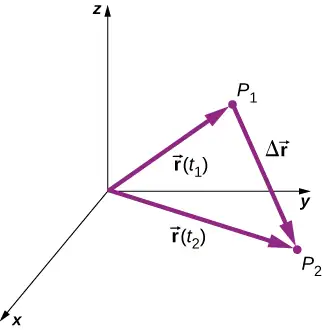
The following examples illustrate the concept of displacement in multiple dimensions.
Example 4.1 Polar Orbiting Satellite
A satellite is in a circular polar orbit around Earth at an altitude of 400 km—meaning, it passes directly overhead at the North and South Poles. What is the magnitude and direction of the displacement vector from when it is directly over the North Pole to when it is at \(-45{}^{\circ}\) latitude?
Strategy
We make a picture of the problem to visualize the solution graphically. This will aid in our understanding of the displacement. We then use unit vectors to solve for the displacement.
Solution
Figure 4.4 shows the surface of Earth and a circle that represents the orbit of the satellite. Although satellites are moving in three-dimensional space, they follow trajectories of ellipses, which can be graphed in two dimensions. The position vectors are drawn from the center of Earth, which we take to be the origin of the coordinate system, with the y-axis as north and the x-axis as east. The vector between them is the displacement of the satellite. We take the radius of Earth as 6370 km, so the length of each position vector is 6770 km.
![An x y coordinate system, centered on the earth, is shown. Positive x is to the east and positive y to the north. A blue circle larger than and concentric with the earth is shown. Vector r of t 1 is an orange arrow from the origin to the location where the blue circle crosses the y axis (90 degrees counter clockwise from the positive x axis.) Vector r of t 2 is an orange arrow from the origin to the location on the blue circle at minus 45 degrees. Delta r vector is shown as a purple arrow pointing down and to the right, starting at the head of vector r of t 1 and ending at the head of vector r of t 2.](img/cnx-uphysics-04-01-satorb.webp)
In unit vector notation, the position vectors are
Evaluating the sine and cosine, we have
Now we can find \(\Delta\mathbf{\vec{r}}\), the displacement of the satellite:
The magnitude of the displacement is \(|\Delta\mathbf{\vec{r}}|=\sqrt{{(4787)}^{2}+{(-11,557)}^{2}}=12,509\:\text{km}.\) The angle the displacement makes with the x-axis is \(\theta=\tan^{-1}\left( \frac{-11,557}{4787} \right)=-67.5{}^{\circ}.\)
Significance
Plotting the displacement gives information and meaning to the unit vector solution to the problem. When plotting the displacement, we need to include its components as well as its magnitude and the angle it makes with a chosen axis—in this case, the x-axis (Figure 4.5).
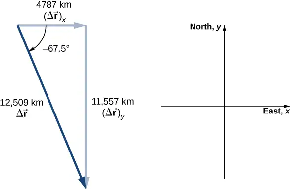
Note that the satellite took a curved path along its circular orbit to get from its initial position to its final position in this example. It also could have traveled 4787 km east, then 11,557 km south to arrive at the same location. Both of these paths are longer than the length of the displacement vector. In fact, the displacement vector gives the shortest path between two points in one, two, or three dimensions.
Many applications in physics can have a series of displacements, as discussed in the previous chapter. The total displacement is the sum of the individual displacements, only this time, we need to be careful, because we are adding vectors. We illustrate this concept with an example of Brownian motion.
Example 4.2 Brownian Motion
Brownian motion is a chaotic random motion of particles suspended in a fluid, resulting from collisions with the molecules of the fluid. This motion is three-dimensional. The displacements in numerical order of a particle undergoing Brownian motion could look like the following, in micrometers (Figure 4.6):
What is the total displacement of the particle from the origin?
![An x y z coordinate system with distances measured in micrometers and ranging from -10 to +10 micrometers is shown. The displacements delta r sub 1 equals 2 I hat plus j hat plus 9 k hat, delta r sub 2 equals -1 I hat plus 3 k hat, and delta r sub 3 equals -3 I hat plus j hat plus 2 k hat are shown as blue line segments. Vector r 1 hat starts at the origin. Each subsequent displacement starts where the previous one ends. Vector delta r total is shown as a red line starting at the origin and ending at the end of vector delta r 4. Delta r total equals 2 I hat plus 0 y hat plus 9 k hat.](img/cnx-uphysics-04-01-browmot.webp)
Solution
We form the sum of the displacements and add them as vectors:
To complete the solution, we express the displacement as a magnitude and direction,
with respect to the x-axis in the xz-plane.
Significance
From the figure we can see the magnitude of the total displacement is less than the sum of the magnitudes of the individual displacements.
Velocity Vector¶
In the previous chapter we found the instantaneous velocity by calculating the derivative of the position function with respect to time. We can do the same operation in two and three dimensions, but we use vectors. The instantaneous velocity vector is now
equation callout
Let’s look at the relative orientation of the position vector and velocity vector graphically. In Figure 4.7 we show the vectors \(\mathbf{\vec{r}}(t)\) and \(\mathbf{\vec{r}}(t+\Delta t),\) which give the position of a particle moving along a path represented by the gray line. As \(\Delta t\) goes to zero, the velocity vector, given by Equation 4.4, becomes tangent to the path of the particle at time t.
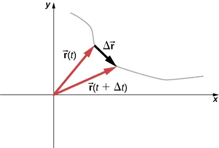
Equation 4.4 can also be written in terms of the components of \(\mathbf{\vec{v}}(t).\) Since
we can write
equation callout
where
equation callout
If only the average velocity is of concern, we have the vector equivalent of the one-dimensional average velocity for two and three dimensions:
equation callout
Example 4.3 Calculating the Velocity Vector
The position function of a particle is \(\mathbf{\vec{r}}(t)=2.0t^{2}\mathbf{\hat{i}}+(2.0+3.0t)\mathbf{\hat{j}}+5.0t\mathbf{\hat{k}}\text{m}.\) (a) What is the instantaneous velocity and speed at t = 2.0 s? (b) What is the average velocity between 1.0 s and 3.0 s?
Solution
Using Equation 4.5 and Equation 4.6, and taking the derivative of the position function with respect to time, we find
(a) \(v(t)=\frac{d\textbf{r}(t)}{dt}=4.0t\mathbf{\hat{i}}+3.0\mathbf{\hat{j}}+5.0\mathbf{\hat{k}}\text{m/s}\)
\(\mathbf{\vec{v}}(2.0s)=8.0\mathbf{\hat{i}}+3.0\mathbf{\hat{j}}+5.0\mathbf{\hat{k}}\text{m/s}\)
Speed \(|\mathbf{\vec{v}}(2.0\:\text{s})|=\sqrt{8^{2}+3^{2}+5^{2}}=9.9\:\text{m/s}.\)
(b) From Equation 4.7,
\(\begin{array}{cc} {\mathbf{\vec{v}}}_{\text{avg}} & =\frac{\mathbf{\vec{r}}(t_{2})-\mathbf{\vec{r}}(t_{1})}{t_{2}-t_{1}}=\frac{\mathbf{\vec{r}}(3.0\:\text{s})-\mathbf{\vec{r}}(1.0\:\text{s})}{3.0\:\text{s}-1.0\:\text{s}}=\frac{(18\mathbf{\hat{i}}+11\mathbf{\hat{j}}+15\mathbf{\hat{k}})\:\text{m}-(2\mathbf{\hat{i}}+5\mathbf{\hat{j}}+5\mathbf{\hat{k}})\:\text{m}}{2.0\:\text{s}} \\ & =\frac{(16\mathbf{\hat{i}}+6\mathbf{\hat{j}}+10\mathbf{\hat{k}})\:\text{m}}{2.0\:\text{s}}=8.0\mathbf{\hat{i}}+3.0\mathbf{\hat{j}}+5.0\mathbf{\hat{k}}\text{m/s}. \end{array}\)
Significance
We see the average velocity is the same as the instantaneous velocity at t = 2.0 s, as a result of the velocity function being linear. This need not be the case in general. In fact, most of the time, instantaneous and average velocities are not the same.
Check Your Understanding
The position function of a particle is \(\mathbf{\vec{r}}(t)=3.0t^{3}\mathbf{\hat{i}}+4.0\mathbf{\hat{j}}.\) (a) What is the instantaneous velocity at t = 3 s? (b) Is the average velocity between 2 s and 4 s equal to the instantaneous velocity at t = 3 s?
Answer
(a) Taking the derivative with respect to time of the position function, we have \(\mathbf{\vec{v}}(t)=9.0t^{2}\mathbf{\hat{i}}\text{and}\mathbf{\vec{v}}\text{(3.0s)}=81.0\mathbf{\hat{i}}\text{m/s}.\) (b) Since the velocity function is nonlinear, we suspect the average velocity is not equal to the instantaneous velocity. We check this and find
\({\mathbf{\vec{v}}}_{\text{avg}}=\frac{\mathbf{\vec{r}}(t_{2})-\mathbf{\vec{r}}(t_{1})}{t_{2}-t_{1}}=\frac{\mathbf{\vec{r}}(4.0\:\text{s})-\mathbf{\vec{r}}(2.0\:\text{s})}{4.0\:\text{s}-2.0\:\text{s}}=\frac{[(192-24)\mathbf{\hat{i}}+(4-4)\mathbf{\hat{i}}]\:\text{m}}{2.0\:\text{s}}=84\mathbf{\hat{j}}\text{m/s},\)
which is different from \(\mathbf{\vec{v}}\text{(3.0s)}=81.0\mathbf{\hat{i}}\text{m/s}.\)
The Independence of Perpendicular Motions¶
When we look at the three-dimensional equations for position and velocity written in unit vector notation, Equation 4.2 and Equation 4.5, we see the components of these equations are separate and unique functions of time that do not depend on one another. Motion along the x direction has no part of its motion along the y and z directions, and similarly for the other two coordinate axes. Thus, the motion of an object in two or three dimensions can be divided into separate, independent motions along the perpendicular axes of the coordinate system in which the motion takes place.
To illustrate this concept with respect to displacement, consider a woman walking from point A to point B in a city with square blocks. The woman taking the path from A to B may walk east for so many blocks and then north (two perpendicular directions) for another set of blocks to arrive at B. How far she walks east is affected only by her motion eastward. Similarly, how far she walks north is affected only by her motion northward.
Independence of Motion
In the kinematic description of motion, we are able to treat the horizontal and vertical components of motion separately. In many cases, motion in the horizontal direction does not affect motion in the vertical direction, and vice versa.
An example illustrating the independence of vertical and horizontal motions is given by two baseballs. One baseball is dropped from rest. At the same instant, another is thrown horizontally from the same height and it follows a curved path. A stroboscope captures the positions of the balls at fixed time intervals as they fall (Figure 4.8).
![Two identical balls are illustrated at 5 locations at equal time intervals. The balls start at the same vertical position. Green arrows represent the horizontal velocities and purple arrows represent the vertical velocities at each position. The ball on the right has an initial horizontal velocity whereas the ball on the left has no horizontal velocity. The horizontal motion is constant horizontal velocity at all times for both balls. The vertical motion is constant vertical acceleration. Each ball’s vertical velocity is increasing in magnitude and pointing down. At each instant in time, both balls have identical vertical positions and vertical velocities.](img/cnx-uphysics-04-01-motion.webp)
It is remarkable that for each flash of the strobe, the vertical positions of the two balls are the same. This similarity implies vertical motion is independent of whether the ball is moving horizontally. (Assuming no air resistance, the vertical motion of a falling object is influenced by gravity only, not by any horizontal forces.) Careful examination of the ball thrown horizontally shows it travels the same horizontal distance between flashes. This is because there are no additional forces on the ball in the horizontal direction after it is thrown. This result means horizontal velocity is constant and is affected neither by vertical motion nor by gravity (which is vertical). Note this case is true for ideal conditions only. In the real world, air resistance affects the speed of the balls in both directions.
The two-dimensional curved path of the horizontally thrown ball is composed of two independent one-dimensional motions (horizontal and vertical). The key to analyzing such motion, called projectile motion, is to resolve it into motions along perpendicular directions. Resolving two-dimensional motion into perpendicular components is possible because the components are independent.
4.2 Acceleration Vector¶
Learning Objectives
By the end of this section, you will be able to:
- Calculate the acceleration vector given the velocity function in unit vector notation.
- Describe the motion of a particle with a constant acceleration in three dimensions.
- Use the one-dimensional motion equations along perpendicular axes to solve a problem in two or three dimensions with a constant acceleration.
- Express the acceleration in unit vector notation.
Instantaneous Acceleration¶
In addition to obtaining the displacement and velocity vectors of an object in motion, we often want to know its acceleration vector at any point in time along its trajectory. This acceleration vector is the instantaneous acceleration and it can be obtained from the derivative with respect to time of the velocity function, as we have seen in a previous chapter. The only difference in two or three dimensions is that these are now vector quantities. Taking the derivative with respect to time \(\mathbf{\vec{v}}(t),\) we find
equation callout
The acceleration in terms of components is
equation callout
Also, since the velocity is the derivative of the position function, we can write the acceleration in terms of the second derivative of the position function:
equation callout
Example 4.4 Finding an Acceleration Vector
A particle has a velocity of \(\mathbf{\vec{v}}(t)=5.0t\mathbf{\hat{i}}+t^{2}\mathbf{\hat{j}}-2.0t^{3}\mathbf{\hat{k}}\text{m/s}.\) (a) What is the acceleration function? (b) What is the acceleration vector at t = 2.0 s? Find its magnitude and direction.
Solution
(a) We take the first derivative with respect to time of the velocity function to find the acceleration. The derivative is taken component by component:
(b) Evaluating \(\mathbf{\vec{a}}(2.0\:\text{s})=5.0\mathbf{\hat{i}}+4.0\mathbf{\hat{j}}-24.0\mathbf{\hat{k}}\text{m/}\text{s}^{2}\) gives us the direction in unit vector notation. The magnitude of the acceleration is \(|\mathbf{\vec{a}}(2.0\:\text{s})|=\sqrt{{5.0}^{2}+{4.0}^{2}+{(-24.0)}^{2}}=24.8\:\text{m/}\text{s}^{2}.\)
Significance
In this example we find that acceleration has a time dependence and is changing throughout the motion. Let’s consider a different velocity function for the particle.
Example 4.5 Finding a Particle Acceleration
A particle has a position function \(\mathbf{\vec{r}}(t)=(10t-t^{2})\mathbf{\hat{i}}+5t\mathbf{\hat{j}}+5t\mathbf{\hat{k}}\text{m}.\) (a) What is the velocity? (b) What is the acceleration? (c) Describe the motion from t = 0 s.
Strategy
We can gain some insight into the problem by looking at the position function. It is linear in y and z, so we know the acceleration in these directions is zero when we take the second derivative. Also, note that the position in the x direction is zero for t = 0 s and t = 10 s.
Solution
(a) Taking the derivative with respect to time of the position function, we find
The velocity function is linear in time in the x direction and is constant in the y and z directions.
(b) Taking the derivative of the velocity function, we find
The acceleration vector is a constant in the negative x-direction.
(c) The trajectory of the particle can be seen in Figure 4.9. Let’s look in the y and z directions first. The particle’s position increases steadily as a function of time with a constant velocity in these directions. In the x direction, however, the particle follows a path in positive x until t = 5 s, when it reverses direction. We know this from looking at the velocity function, which becomes zero at this time and negative thereafter. We also know this because the acceleration is negative and constant—meaning, the particle is accelerating in the opposite direction. The particle’s position reaches 25 m, where it then reverses direction and begins to accelerate in the negative x direction. The position reaches zero at t = 10 s.
![An x y z coordinate system is shown. All the axes show distance in meters and run from -50 to 50 meters. A series of 10 red stars are shown, with the sixth star is labeled as t = 6 s and the tenth as t = 10 s. The red series of stars starts at the origin and curves upward (both y and z increasing with time). Vertical dashed lines connect the red dots to a series of blue dots in the x y plane. The blue dots are all in the first quadrant (positive x and y). The dots are regularly spaced along the y coordinate, while the x coordinate starts at 0, increases, reaches a maximum of x = 25 m at t = 5, and then decreases back to x = 0 at t 10 s.](img/cnx-uphysics-04-02-trajectory.webp)
Significance
By graphing the trajectory of the particle, we can better understand its motion, given by the numerical results of the kinematic equations.
Check Your Understanding
Suppose the acceleration function has the form \(\mathbf{\vec{a}}(t)=a\mathbf{\hat{i}}+b\mathbf{\hat{j}}+c\mathbf{\hat{k}}\text{m/}\text{s}^{2},\) where a, b, and c are constants. What can be said about the functional form of the velocity function?
Answer
The acceleration vector is constant and doesn’t change with time. If a, b, and c are not zero, then the velocity function must be linear in time. We have \(\mathbf{\vec{v}}(t)=\displaystyle \int\mathbf{\vec{a}}dt=\displaystyle \int(a\mathbf{\hat{i}}+b\mathbf{\hat{j}}+c\mathbf{\hat{k}})dt=(a\mathbf{\hat{i}}+b\mathbf{\hat{j}}+c\mathbf{\hat{k}})t\:\text{m/s},\) since taking the derivative of the velocity function produces \(\mathbf{\vec{a}}(t).\) If any of the components of the acceleration are zero, then that component of the velocity would be a constant.
Constant Acceleration¶
Multidimensional motion with constant acceleration can be treated the same way as shown in the previous chapter for one-dimensional motion. Earlier we showed that three-dimensional motion is equivalent to three one-dimensional motions, each along an axis perpendicular to the others. To develop the relevant equations in each direction, let’s consider the two-dimensional problem of a particle moving in the xy plane with constant acceleration, ignoring the z-component for the moment. The acceleration vector is
Each component of the motion has a separate set of equations similar to Equation 3.10–Equation 3.14 of the previous chapter on one-dimensional motion. We show only the equations for position and velocity in the x- and y-directions. A similar set of kinematic equations could be written for motion in the z-direction:
Here the subscript 0 denotes the initial position or velocity. Equation 4.11 to Equation 4.18 can be substituted into Equation 4.2 and Equation 4.5 without the z-component to obtain the position vector and velocity vector as a function of time in two dimensions:
The following example illustrates a practical use of the kinematic equations in two dimensions.
Example 4.6 A Skier
Figure 4.10 shows a skier moving with an acceleration of \(2.1\:\text{m/}\text{s}^{2}\) down a slope of \(15{}^{\circ}\) at t = 0. With the origin of the coordinate system at the front of the lodge, her initial position and velocity are
and
(a) What are the x- and y-components of the skier’s position and velocity as functions of time? (b) What are her position and velocity at t = 10.0 s?
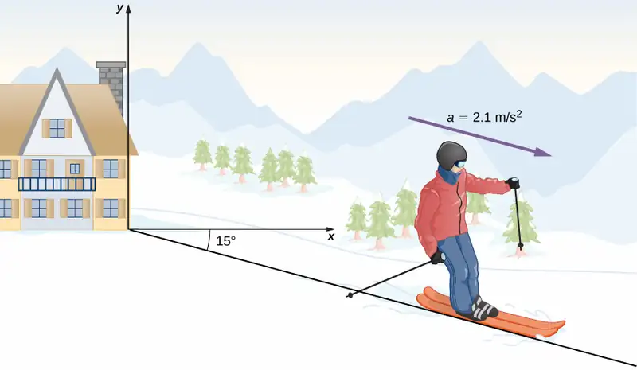
Strategy
Since we are evaluating the components of the motion equations in the x and y directions, we need to find the components of the acceleration and put them into the kinematic equations. The components of the acceleration are found by referring to the coordinate system in Figure 4.10. Then, by inserting the components of the initial position and velocity into the motion equations, we can solve for her position and velocity at a later time t.
Solution
(a) The origin of the coordinate system is at the top of the hill with y-axis vertically upward and the x-axis horizontal. By looking at the trajectory of the skier, the x-component of the acceleration is positive and the y-component is negative. Since the angle is \(15{}^{\circ}\) down the slope, we find
Inserting the initial position and velocity into Equation 4.12 and Equation 4.13 for x, we have
For y, we have
(b) Now that we have the equations of motion for x and y as functions of time, we can evaluate them at t = 10.0 s:
The position and velocity at t = 10.0 s are, finally,
The magnitude of the velocity of the skier at 10.0 s is 25 m/s, which is 60 mi/h.
Significance
It is useful to know that, given the initial conditions of position, velocity, and acceleration of an object, we can find the position, velocity, and acceleration at any later time.
With Equation 4.8 through Equation 4.10 we have completed the set of expressions for the position, velocity, and acceleration of an object moving in two or three dimensions. If the trajectories of the objects look something like the “Red Arrows” in the opening picture for the chapter, then the expressions for the position, velocity, and acceleration can be quite complicated. In the sections to follow we examine two special cases of motion in two and three dimensions by looking at projectile motion and circular motion.
Media
At this University of Colorado Boulder website, you can explore the position velocity and acceleration of a ladybug with an interactive simulation that allows you to change these parameters.
4.3 Projectile Motion¶
Learning Objectives
By the end of this section, you will be able to:
- Use one-dimensional motion in perpendicular directions to analyze projectile motion.
- Calculate the range, time of flight, and maximum height of a projectile that is launched and impacts a flat, horizontal surface.
- Find the time of flight and impact velocity of a projectile that lands at a different height from that of launch.
- Calculate the trajectory of a projectile.
Projectile motion is the motion of an object thrown or projected into the air, subject only to acceleration as a result of gravity. The applications of projectile motion in physics and engineering are numerous. Some examples include meteors as they enter Earth’s atmosphere, fireworks, and the motion of any ball in sports. Such objects are called projectiles and their path is called a trajectory. The motion of falling objects as discussed in Motion Along a Straight Line is a simple one-dimensional type of projectile motion in which there is no horizontal movement. In this section, we consider two-dimensional projectile motion, and our treatment neglects the effects of air resistance.
The most important fact to remember here is that motions along perpendicular axes are independent and thus can be analyzed separately. We discussed this fact in Displacement and Velocity Vectors, where we saw that vertical and horizontal motions are independent. The key to analyzing two-dimensional projectile motion is to break it into two motions: one along the horizontal axis and the other along the vertical. (This choice of axes is the most sensible because acceleration resulting from gravity is vertical; thus, there is no acceleration along the horizontal axis when air resistance is negligible.) As is customary, we call the horizontal axis the x-axis and the vertical axis the y-axis. It is not required that we use this choice of axes; it is simply convenient in the case of gravitational acceleration. In other cases we may choose a different set of axes. Figure 4.11 illustrates the notation for displacement, where we define \(\mathbf{\vec{s}}\) to be the total displacement, and \(\mathbf{\vec{x}}\) and \(\mathbf{\vec{y}}\) are its component vectors along the horizontal and vertical axes, respectively. The magnitudes of these vectors are s, x, and y.
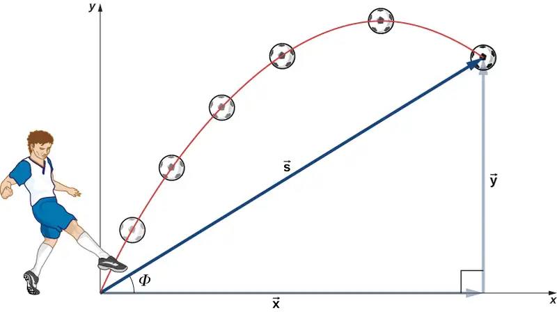
To describe projectile motion completely, we must include velocity and acceleration, as well as displacement. We must find their components along the x- and y-axes. Let’s assume all forces except gravity (such as air resistance and friction, for example) are negligible. Defining the positive direction to be upward, the components of acceleration are then very simple:
Because gravity is vertical, \(a_{x}=0.\) If \(a_{x}=0,\) this means the initial velocity in the x direction is equal to the final velocity in the x direction, or \(v_{x}=v_{0x}.\) With these conditions on acceleration and velocity, we can write the kinematic Equation 4.11 through Equation 4.18 for motion in a uniform gravitational field, including the rest of the kinematic equations for a constant acceleration from Motion with Constant Acceleration. The kinematic equations for motion in a uniform gravitational field become kinematic equations with \(a_{y}=-g,\;a_{x}=0:\)
Horizontal Motion
Vertical Motion
Using this set of equations, we can analyze projectile motion, keeping in mind some important points.
Problem-Solving Strategy: Projectile Motion
-
Resolve the motion into horizontal and vertical components along the x- and y-axes. The magnitudes of the components of displacement \(\mathbf{\vec{s}}\) along these axes are x and y. The magnitudes of the components of velocity \(\mathbf{\vec{v}}\) are \(v_{x}=v\cos\,\theta\:\text{and}\:v_{y}=v\sin\,\theta,\) where v is the magnitude of the velocity and θ is its direction relative to the horizontal, as shown in Figure 4.12.
-
Treat the motion as two independent one-dimensional motions: one horizontal and the other vertical. Use the kinematic equations for horizontal and vertical motion presented earlier.
-
Solve for the unknowns in the two separate motions: one horizontal and one vertical. Note that the only common variable between the motions is time t. The problem-solving procedures here are the same as those for one-dimensional kinematics and are illustrated in the following solved examples.
-
Recombine quantities in the horizontal and vertical directions to find the total displacement \(\mathbf{\vec{s}}\) and velocity \(\mathbf{\vec{v}}.\) Solve for the magnitude and direction of the displacement and velocity using
\[ s=\sqrt{x^{2}+y^{2}},\;\Phi=\tan^{-1}(y\text{/}x),\;v=\sqrt{v_{x}^{2}+v_{y}^{2}}, \]
where Φ is the direction of the displacement \(\mathbf{\vec{s}}.\)
![Figure a shows the locations and velocities of a projectile on an x y coordinate system at 10 instants in time. When the projectile is at the origin, it has a velocity v sub 0 y which makes an angle theta sub 0 with the horizontal. The velocity is shown as a dark blue arrow, and its x and y components are shown as light blue arrow. The projectile’s position follows a downward-opening parabola, moving up to a maximum height, then back to y = 0, and continuing below the x axis The velocity, V, at each time makes an angle theta which changes in time, and has x component V sub x and y component v sub y. The x component of the velocity V sub x is the same at all times. The y component v sub y points up but gets smaller, until the projectile reaches the maximum height, where the velocity is horizontal and has no y component. After the maximum height, the velocity has a y component pointing down and growing larger. As the projectile reaches the same elevation on the way down as it had on the way up, its velocity is below the horizontal by the same angle theta as it was above the horizontal on the way up. In particular, when it comes back to y = 0 on the way down, the angle between the vector v and the horizontal is minus s=theta sub zero and the y component of the velocity is minus v sub 0 y. The last position shown is below the x axis, and the y component of the velocity is larger than it was initially. The graph clearly shows that the horizontal distances travelled in each of the time intervals are equal, while the vertical distances decrease on the way up and increase on the way down. Figure b shows the horizontal component, constant velocity. The horizontal positions and x components of the velocity of the projectile are shown along a horizontal line. The positions are evenly spaced, and the x components of the velocities are all the same, and point to the right. Figure c shows the vertical component, constant acceleration. The vertical positions and y components of the velocity of the projectile are shown along a vertical line. The positions are get closer together on the way up, then further apart on the way down. The y components of the velocities initially point up, decreasing in magnitude until there is no y component to the velocity at the maximum height. After the maximum height, the y components of the velocities point down and increase in magnitude. Figure d shows that putting the horizontal and vertical components of figures b and c together gives the total velocity at a point. The velocity V has an x component of V sub x, has y component of V sub y, and makes an angle of theta with the horizontal. In the example shown, the velocity has a downward y component.](img/cnx-uphysics-04-03-2dmotion.webp)
Example 4.7 A Fireworks Projectile Explodes High and Away
During a fireworks display, a shell is shot into the air with an initial speed of 70.0 m/s at an angle of \(75.0{}^{\circ}\) above the horizontal, as illustrated in Figure 4.13. The fuse is timed to ignite the shell just as it reaches its highest point above the ground. (a) Calculate the height at which the shell explodes. (b) How much time passes between the launch of the shell and the explosion? (c) What is the horizontal displacement of the shell when it explodes? (d) What is the total displacement from the point of launch to the highest point?
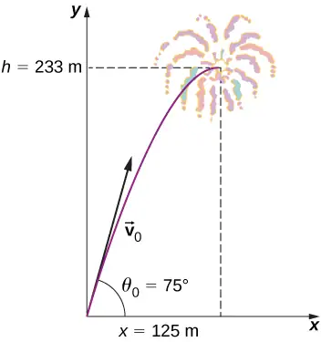
Strategy
The motion can be broken into horizontal and vertical motions in which \(a_{x}=0\) and \(a_{y}=-g.\) We can then define \(x_{0}\) and \(y_{0}\) to be zero and solve for the desired quantities.
Solution
(a) By “height” we mean the altitude or vertical position y above the starting point. The highest point in any trajectory, called the apex, is reached when \(v_{y}=0.\) Since we know the initial and final velocities, as well as the initial position, we use the following equation to find y:
Because \(y_{0}\) and \(v_{y}\) are both zero, the equation simplifies to
Solving for y gives
Now we must find \(v_{0y},\) the component of the initial velocity in the y direction. It is given by \(v_{0y}=v_{0}\sin\theta_{0},\) where \(v_{0}\) is the initial velocity of 70.0 m/s and \(\theta_{0}=75{}^{\circ}\) is the initial angle. Thus,
and y is
Thus, we have
Note that because up is positive, the initial vertical velocity is positive, as is the maximum height, but the acceleration resulting from gravity is negative. Note also that the maximum height depends only on the vertical component of the initial velocity, so that any projectile with a 67.6-m/s initial vertical component of velocity reaches a maximum height of 233 m (neglecting air resistance). The numbers in this example are reasonable for large fireworks displays, the shells of which do reach such heights before exploding. In practice, air resistance is not completely negligible, so the initial velocity would have to be somewhat larger than that given to reach the same height.
(b) As in many physics problems, there is more than one way to solve for the time the projectile reaches its highest point. In this case, the easiest method is to use \(v_{y}=v_{0y}-gt.\) Because \(v_{y}=0\) at the apex, this equation reduces to simply
or
This time is also reasonable for large fireworks. If you are able to see the launch of fireworks, notice that several seconds pass before the shell explodes. Another way of finding the time is by using\(y\:\text{=}\:y_{0}+\frac{1}{2}(v_{0y}+v_{y})t.\) This is left for you as an exercise to complete.
(c) Because air resistance is negligible, \(a_{x}=0\) and the horizontal velocity is constant, as discussed earlier. The horizontal displacement is the horizontal velocity multiplied by time as given by \(x=x_{0}+v_{x}t,\) where \(x_{0}\) is equal to zero. Thus,
where \(v_{x}\) is the x-component of the velocity, which is given by
Time t for both motions is the same, so x is
Horizontal motion is a constant velocity in the absence of air resistance. The horizontal displacement found here could be useful in keeping the fireworks fragments from falling on spectators. When the shell explodes, air resistance has a major effect, and many fragments land directly below.
(d) The horizontal and vertical components of the displacement were just calculated, so all that is needed here is to find the magnitude and direction of the displacement at the highest point:
Note that the angle for the displacement vector is less than the initial angle of launch. To see why this is, review Figure 4.11, which shows the curvature of the trajectory toward the ground level.
When solving Example 4.7(a), the expression we found for y is valid for any projectile motion when air resistance is negligible. Call the maximum height y = h. Then,
This equation defines the maximum height of a projectile above its launch position and it depends only on the vertical component of the initial velocity.
Check Your Understanding
A rock is thrown horizontally off a cliff \(100.0\:\text{m}\) high with a velocity of 15.0 m/s. (a) Define the origin of the coordinate system. (b) Which equation describes the horizontal motion? (c) Which equations describe the vertical motion? (d) What is the rock’s velocity at the point of impact?
Answer
(a) Choose the top of the cliff where the rock is thrown from the origin of the coordinate system. Although it is arbitrary, we typically choose time t = 0 to correspond to the origin. (b) The equation that describes the horizontal motion is \(x=x_{0}+v_{x}t.\) With \(x_{0}=0,\) this equation becomes \(x=v_{x}t.\) (c) Equation 4.16 through Equation 4.18 and Equation 4.19 describe the vertical motion, but since \(y_{0}=0\:\text{and}\:v_{0y}=0,\) these equations simplify greatly to become \(y=\frac{1}{2}(v_{0y}+v_{y})t=\frac{1}{2}v_{y}t,\) \(v_{y}=-gt,\) \(y=-\frac{1}{2}gt^{2},\) and \(v_{y}^{2}=-2gy.\) (d) We use the kinematic equations to find the x and y components of the velocity at the point of impact. Using \(v_{y}^{2}=-2gy\) and noting the point of impact is −100.0 m, we find the y component of the velocity at impact is \(v_{y}=44.3\:\text{m}\text{/}\text{s}.\) We are given the x component, \(v_{x}=15.0\:\text{m}\text{/}\text{s},\) so we can calculate the total velocity at impact: v = 46.8 m/s and \(\theta=71.3{}^{\circ}\) below the horizontal.
Example 4.8 Calculating Projectile Motion: Tennis Player
A tennis player wins a match at Arthur Ashe stadium and hits a ball into the stands at 30 m/s and at an angle \(45{}^{\circ}\) above the horizontal (Figure 4.14). On its way down, the ball is caught by a spectator 10 m above the point where the ball was hit. (a) Calculate the time it takes the tennis ball to reach the spectator. (b) What are the magnitude and direction of the ball’s velocity at impact?
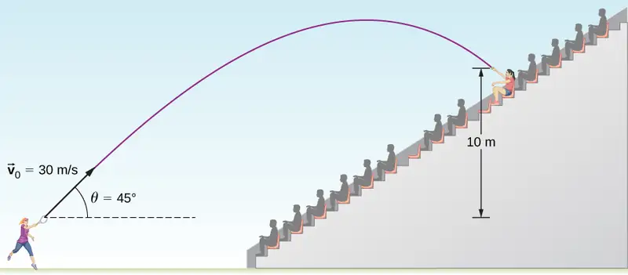
Strategy
Again, resolving this two-dimensional motion into two independent one-dimensional motions allows us to solve for the desired quantities. The time a projectile is in the air is governed by its vertical motion alone. Thus, we solve for t first. While the ball is rising and falling vertically, the horizontal motion continues at a constant velocity. This example asks for the final velocity. Thus, we recombine the vertical and horizontal results to obtain \(\vec{v}\) at final time t, determined in the first part of the example.
Solution
(a) While the ball is in the air, it rises and then falls to a final position 10.0 m higher than its starting altitude. We can find the time for this by using Equation 4.22:
If we take the initial position \(y_{0}\) to be zero, then the final position is y = 10 m. The initial vertical velocity is the vertical component of the initial velocity:
Substituting into Equation 4.22 for y gives us
Rearranging terms gives a quadratic equation in t:
Use of the quadratic formula yields t = 3.79 s and t = 0.54 s. Since the ball is at a height of 10 m at two times during its trajectory—once on the way up and once on the way down—we take the longer solution for the time it takes the ball to reach the spectator:
The time for projectile motion is determined completely by the vertical motion. Thus, any projectile that has an initial vertical velocity of 21.2 m/s and lands 10.0 m above its starting altitude spends 3.79 s in the air.
(b) We can find the final horizontal and vertical velocities \(v_{x}\) and \(v_{y}\) with the use of the result from (a). Then, we can combine them to find the magnitude of the total velocity vector \(\mathbf{\vec{v}}\) and the angle \(\theta\) it makes with the horizontal. Since \(v_{x}\) is constant, we can solve for it at any horizontal location. We choose the starting point because we know both the initial velocity and the initial angle. Therefore,
The final vertical velocity is given by Equation 4.21:
Since \(v_{0y}\) was found in part (a) to be 21.2 m/s, we have
The magnitude of the final velocity \(\mathbf{\vec{v}}\) is
The direction \(\theta_{v}\) is found using the inverse tangent:
Significance
(a) As mentioned earlier, the time for projectile motion is determined completely by the vertical motion. Thus, any projectile that has an initial vertical velocity of 21.2 m/s and lands 10.0 m above its starting altitude spends 3.79 s in the air. (b) The negative angle means the velocity is \(36.9{}^{\circ}\) below the horizontal at the point of impact. This result is consistent with the fact that the ball is impacting at a point on the other side of the apex of the trajectory and therefore has a negative y component of the velocity. The magnitude of the velocity is less than the magnitude of the initial velocity we expect since it is impacting 10.0 m above the launch elevation.
Time of Flight, Trajectory, and Range¶
Of interest are the time of flight, trajectory, and range for a projectile launched on a flat horizontal surface and impacting on the same surface. In this case, kinematic equations give useful expressions for these quantities, which are derived in the following sections.
Time of flight¶
We can solve for the time of flight of a projectile that is both launched and impacts on a flat horizontal surface by performing some manipulations of the kinematic equations. We note the position and displacement in y must be zero at launch and at impact on an even surface. Thus, we set the displacement in y equal to zero and find
Factoring, we have
Solving for t gives us
equation callout
This is the time of flight for a projectile both launched and impacting on a flat horizontal surface. Equation 4.24 does not apply when the projectile lands at a different elevation than it was launched, as we saw in Example 4.8 of the tennis player hitting the ball into the stands. The other solution, t = 0, corresponds to the time at launch. The time of flight is linearly proportional to the initial velocity in the y direction and inversely proportional to g. Thus, on the Moon, where gravity is one-sixth that of Earth, a projectile launched with the same velocity as on Earth would be airborne six times as long.
Trajectory¶
The trajectory of a projectile can be found by eliminating the time variable t from the kinematic equations for arbitrary t and solving for y(x). We take \(x_{0}=y_{0}=0\) so the projectile is launched from the origin. The kinematic equation for x gives
Substituting the expression for t into the equation for the position \(y=(v_{0}\sin\theta_{0})t-\frac{1}{2}gt^{2}\) gives
Rearranging terms, we have
equation callout
This trajectory equation is of the form \(y=ax+bx^{2},\) which is an equation of a parabola with coefficients
Range¶
From the trajectory equation we can also find the range, or the horizontal distance traveled by the projectile. Factoring Equation 4.25, we have
The position y is zero for both the launch point and the impact point, since we are again considering only a flat horizontal surface. Setting y = 0 in this equation gives solutions x = 0, corresponding to the launch point, and
corresponding to the impact point. Using the trigonometric identity \(2\sin\,\theta\cos\,\theta=\sin 2\theta\) and setting x = R for range, we find
equation callout
Note particularly that Equation 4.26 is valid only for launch and impact on a horizontal surface. We see the range is directly proportional to the square of the initial speed \(v_{0}\) and \(\sin 2\theta_{0}\), and it is inversely proportional to the acceleration of gravity. Thus, on the Moon, the range would be six times greater than on Earth for the same initial velocity. Furthermore, we see from the factor \(\sin 2\theta_{0}\) that the range is maximum at \(45{}^{\circ}.\) These results are shown in Figure 4.15. In (a) we see that the greater the initial velocity, the greater the range. In (b), we see that the range is maximum at \(45{}^{\circ}.\) This is true only for conditions neglecting air resistance. If air resistance is considered, the maximum angle is somewhat smaller. It is interesting that the same range is found for two initial launch angles that sum to \(90{}^{\circ}.\) The projectile launched with the smaller angle has a lower apex than the higher angle, but they both have the same range.
![Figure a shows the trajectories of projectiles launched at the same initial 45 degree angle above the horizontal and different initial velocities. The trajectories are shown from launch to landing back at the initial elevation. In orange is the trajectory for 30 meters per second, giving a range R (distance from launch to landing) of 91.8 m. In purple is the trajectory for 40 meters per second, giving a range R of 163 m. In blue is the trajectory for 50 meters per second, giving a range R of 255 m. The maximum height of the projectile increases with initial speed. Figure b shows the trajectories of projectiles launched at the same initial speed of 50 meters per second and different launch angles. The trajectories are shown from launch to landing back at the initial elevation. In orange is the trajectory for an angle of 15 degrees above the horizontal, giving a range R of 128 m. In purple is the trajectory for an angle of 45 degrees above the horizontal, giving a range R of 255 m. In blue is the trajectory for an angle of 75 degrees above the horizontal, giving a range R of 128 m, the same as for the 15 degree trajectory. The maximum height increases with launch angle.](img/cnx-uphysics-04-03-trajproj.webp)
Example 4.9 Comparing Golf Shots
A golfer encounters two different situations on different holes. On the second hole they are 120 m from the green and want to hit the ball 90 m and let it run onto the green. They angle the shot low to the ground at \(30{}^{\circ}\) to the horizontal to let the ball roll after impact. On the fourth hole they are 90 m from the green and want to let the ball drop with a minimum amount of rolling after impact. Here, they angle the shot at \(70{}^{\circ}\) to the horizontal to minimize rolling after impact. Both shots are hit and impacted on a level surface.
(a) What is the initial speed of the ball at the second hole?
(b) What is the initial speed of the ball at the fourth hole?
(c) Write the trajectory equation for both cases.
(d) Graph the trajectories.
Strategy
We see that the range equation has the initial speed and angle, so we can solve for the initial speed for both (a) and (b). When we have the initial speed, we can use this value to write the trajectory equation.
Solution
(a) \(R=\frac{v_{0}^{2}\sin\,2\theta_{0}}{g}\Rightarrow v_{0}=\sqrt{\frac{Rg}{\sin\,2\theta_{0}}}=\sqrt{\frac{90.0\:\text{m}(9.8\:\text{m}\text{/}\text{s}^{2})}{\sin(2(30{}^{\circ}))}}=31.9\:\text{m}\text{/}\text{s}\)
(b) \(R=\frac{v_{0}^{2}\sin\,2\theta_{0}}{g}\Rightarrow v_{0}=\sqrt{\frac{Rg}{\sin\,2\theta_{0}}}=\sqrt{\frac{90.0\:\text{m}(9.8\:\text{m}\text{/}\text{s}^{2})}{\sin(2(70{}^{\circ}))}}=37.0\:\text{m}\text{/}\text{s}\)
(c)
\(\begin{array}{c} y=x\left[ \tan\,\theta_{0}-\frac{g}{2{(v_{0}\cos\,\theta_{0})}^{2}}x \right] \\ \text{Second hole:}\:y=x\left[ \tan\:30{}^{\circ}-\frac{9.8\:\text{m}\text{/}\text{s}^{2}}{2{[(31.9\:\text{m}\text{/}\text{s)(}\cos 30{}^{\circ})]}^{2}}x \right]=0.58x-0.0064x^{2} \\ \text{Fourth hole:}\:y=x\left[ \tan\:70{}^{\circ}-\frac{9.8\:\text{m}\text{/}\text{s}^{2}}{2{[(37.0\:\text{m}\text{/}\text{s)(}\cos\:70{}^{\circ})]}^{2}}x \right]=2.75x-0.0306x^{2} \end{array}\)
(d) Using a graphing utility, we can compare the two trajectories, which are shown in Figure 4.16.
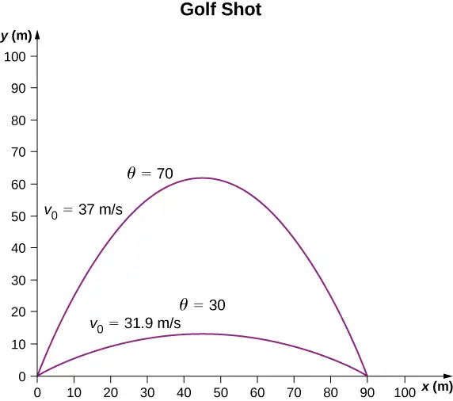
Significance
The initial speed for the shot at \(70{}^{\circ}\) is greater than the initial speed of the shot at \(30{}^{\circ}.\) Note from Figure 4.16 that if the two projectiles were launched at the same speed but at different angles, the projectiles would have the same range as long as the angles were less than \(90{}^{\circ}.\) The launch angles in this example add to give a number greater than \(90{}^{\circ}.\) Thus, the shot at \(70{}^{\circ}\) has to have a greater launch speed to reach 90 m, otherwise it would land at a shorter distance.
Check Your Understanding
If the two golf shots in Example 4.9 were launched at the same speed, which shot would have the greatest range?
Answer
The golf shot at \(30{}^{\circ}.\)
When we speak of the range of a projectile on level ground, we assume R is very small compared with the circumference of Earth. If, however, the range is large, Earth curves away below the projectile and the acceleration resulting from gravity changes direction along the path. The range is larger than predicted by the range equation given earlier because the projectile has farther to fall than it would on level ground, as shown in Figure 4.17, which is based on a drawing in Newton’s Principia. If the initial speed is great enough, the projectile goes into orbit. Earth’s surface drops 5 m every 8000 m. In 1 s an object falls 5 m without air resistance. Thus, if an object is given a horizontal velocity of 8000 m/s (or 18,000 mi/hr) near Earth’s surface, it will go into orbit around the planet because the surface continuously falls away from the object. This is roughly the speed of the Space Shuttle in a low Earth orbit when it was operational, or any satellite in a low Earth orbit. These and other aspects of orbital motion, such as Earth’s rotation, are covered in greater depth in Gravitation.
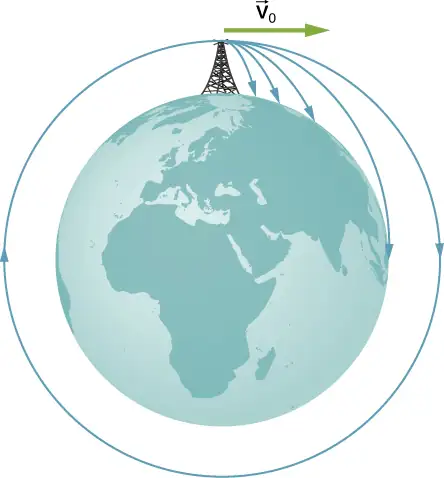
Media
At PhET Explorations: Projectile Motion, learn about projectile motion in terms of the launch angle and initial velocity.
4.4 Uniform and Nonuniform Circular Motion¶
Learning Objectives
By the end of this section, you will be able to:
- Solve for the centripetal acceleration of an object moving on a circular path.
- Use the equations of circular motion to find the position, velocity, and acceleration of a particle executing circular motion.
- Explain the differences between centripetal acceleration and tangential acceleration resulting from nonuniform circular motion.
- Evaluate centripetal and tangential acceleration in nonuniform circular motion, and find the total acceleration vector.
Uniform circular motion is a specific type of motion in which an object travels in a circle with a constant speed. For example, any point on a propeller spinning at a constant rate is executing uniform circular motion. Other examples are the second, minute, and hour hands of a watch. It is remarkable that points on these rotating objects are actually accelerating, although the rotation rate is a constant. To see this, we must analyze the motion in terms of vectors.
Centripetal Acceleration¶
In one-dimensional kinematics, objects with a constant speed have zero acceleration. However, in two- and three-dimensional kinematics, even if the speed is a constant, a particle can have acceleration if it moves along a curved trajectory such as a circle. In this case the velocity vector is changing, or \(d\mathbf{\vec{v}}\text{/}dt\neq 0.\) This is shown in Figure 4.18. As the particle moves counterclockwise in time \(\Delta t\) on the circular path, its position vector moves from \(\mathbf{\vec{r}}(t)\) to \(\mathbf{\vec{r}}(t+\Delta t).\) The velocity vector has constant magnitude and is tangent to the path as it changes from \(\mathbf{\vec{v}}(t)\) to \(\mathbf{\vec{v}}(t+\Delta t),\) changing its direction only. Since the velocity vector \(\mathbf{\vec{v}}(t)\) is perpendicular to the position vector \(\mathbf{\vec{r}}(t),\) the triangles formed by the position vectors and \(\Delta\mathbf{\vec{r}},\) and the velocity vectors and \(\Delta\mathbf{\vec{v}}\) are similar. Furthermore, since \(|\mathbf{\vec{r}}(t)|=|\mathbf{\vec{r}}(t+\Delta t)|\) and \(|\mathbf{\vec{v}}(t)|=|\mathbf{\vec{v}}(t+\Delta t)|,\) the two triangles are isosceles. From these facts we can make the assertion
\(\frac{\Delta v}{v}=\frac{\Delta r}{r}\) or \(\Delta v=\frac{v}{r}\Delta r.\)
![Figure a shows a circle with center at point C. We are shown radius r of t and radius r of t, which are an angle Delta theta apart, and the chord length delta r connecting the ends of the two radii. Vectors r of t, r of t plus delta t, and delta r form a triangle. At the tip of vector r of t, the velocity is shown as v of t and points up and to the right, tangent to the circle. . At the tip of vector r of t plus delta t, the velocity is shown as v of t plus delta t and points up and to the left, tangent to the circle. Figure b shows the vectors v of t and v of t plus delta t with their tails together, and the vector delta v from the tip of v of t to the tip of v of t plus delta t. These three vectors form a triangle. The angle between the v of t and v of t plus delta t is theta.](img/cnx-uphysics-04-04-circle.webp)
We can find the magnitude of the acceleration from
The direction of the acceleration can also be found by noting that as \(\Delta t\) and therefore \(\Delta\theta\) approach zero, the vector \(\Delta\mathbf{\vec{v}}\) approaches a direction perpendicular to \(\mathbf{\mathbf{\vec{v}}}.\) In the limit \(\Delta t\rightarrow 0,\) \(\Delta\mathbf{\vec{v}}\) is perpendicular to \(\mathbf{\mathbf{\vec{v}}}.\) Since \(\mathbf{\mathbf{\vec{v}}}\) is tangent to the circle, the acceleration \(d\mathbf{\vec{v}}\text{/}dt\) points toward the center of the circle. Summarizing, a particle moving in a circle at a constant speed has an acceleration with magnitude
equation callout
The direction of the acceleration vector is toward the center of the circle (Figure 4.19). This is a radial acceleration and is called the centripetal acceleration, which is why we give it the subscript c. The word centripetal comes from the Latin words centrum (meaning “center”) and petere (meaning “to seek”), and thus takes the meaning “center seeking.”
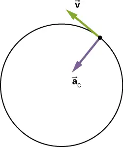
Let’s investigate some examples that illustrate the relative magnitudes of the velocity, radius, and centripetal acceleration.
Example 4.10 Creating an Acceleration of 1 g
A jet is flying at 134.1 m/s along a straight line and makes a turn along a circular path level with the ground. What does the radius of the circle have to be to produce a centripetal acceleration of 1 g on the pilot and jet toward the center of the circular trajectory?
Strategy
Given the speed of the jet, we can solve for the radius of the circle in the expression for the centripetal acceleration.
Solution
Set the centripetal acceleration equal to the acceleration of gravity: \(9.8{\:\text{m/s}}^{2}=v^{2}\text{/}r.\)
Solving for the radius, we find
Significance
To create a greater acceleration than g on the pilot, the jet would either have to decrease the radius of its circular trajectory or increase its speed on its existing trajectory or both.
Check Your Understanding
A flywheel has a radius of 20.0 cm. What is the speed of a point on the edge of the flywheel if it experiences a centripetal acceleration of \(900.0\:{\text{cm}\text{/}\text{s}}^{2}?\)
Answer
134.0 cm/s
Centripetal acceleration can have a wide range of values, depending on the speed and radius of curvature of the circular path. Typical centripetal accelerations are given in the following table.
Table 4.1 Typical Centripetal Accelerations
| Object | Centripetal Acceleration (m/s2 or factors of g) |
|---|---|
| Earth around the Sun | \(5.93\:\times\:{10}^{-3}\) |
| Moon around the Earth | \(2.73\:\times\:{10}^{-3}\) |
| Satellite in geosynchronous orbit | 0.233 |
| Outer edge of a CD when playing | \(5.78\) |
| Jet in a barrel roll | (2–3 g) |
| Roller coaster | (5 g) |
| Electron orbiting a proton in a simple Bohr model of the atom | \(9.0\:\times\:{10}^{22}\) |
Equations of Motion for Uniform Circular Motion¶
A particle executing circular motion can be described by its position vector \(\mathbf{\vec{r}}(t).\) Figure 4.20 shows a particle executing circular motion in a counterclockwise direction. As the particle moves on the circle, its position vector sweeps out the angle \(\theta\) with the x-axis. Vector \(\mathbf{\vec{r}}(t)\) making an angle \(\theta\) with the x-axis is shown with its components along the x- and y-axes. The magnitude of the position vector is \(A=|\mathbf{\vec{r}}(t)|\) and is also the radius of the circle, so that in terms of its components,
equation callout
Here, \(\omega\) is a constant called the angular frequency of the particle. The angular frequency has units of radians (rad) per second and is simply the number of radians of angular measure through which the particle passes per second. The angle \(\theta\) that the position vector has at any particular time is \(\omega t\).
If T is the period of motion, or the time to complete one revolution (\(2\pi\) rad), then
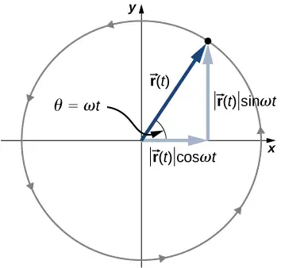
Velocity and acceleration can be obtained from the position function by differentiation:
equation callout
It can be shown from Figure 4.20 that the velocity vector is tangential to the circle at the location of the particle, with magnitude \(A\omega.\) Similarly, the acceleration vector is found by differentiating the velocity:
equation callout
From this equation we see that the acceleration vector has magnitude \(A\omega^{2}\) and is directed opposite the position vector, toward the origin, because \(\mathbf{\vec{a}}(t)=-\omega^{2}\mathbf{\vec{r}}(t).\)
Example 4.11 Circular Motion of a Proton
A proton has speed \(5\:\times\:{10}^{6}\:\text{m/s}\) and is moving in a circle in the xy plane of radius r = 0.175 m. What is its position in the xy plane at time \(t=2.0\:\times\:{10}^{-7}\:\text{s}=200\:\text{ns?}\) At t = 0, the position of the proton is \(0.175\:\text{m}\mathbf{\hat{i}}\) and it circles counterclockwise. Sketch the trajectory.
Solution
According to Equation 3.5,
Since the period T is the time it takes an object to go once around a circle, and the distance around a circle is 2πr, we have:
From the given data, the proton has period and angular frequency:
The position of the particle at \(t=2.0\:\times\:{10}^{-7}\:\text{s}\) with A = 0.175 m is
From this result we see that the proton is located slightly below the x-axis. This is shown in Figure 4.21.
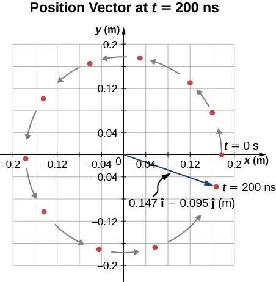
Significance
We picked the initial position of the particle to be on the x-axis. This was completely arbitrary. If a different starting position were given, we would have a different final position at t = 200 ns.
Nonuniform Circular Motion¶
Circular motion does not have to be at a constant speed. A particle can travel in a circle and speed up or slow down, showing an acceleration in the direction of the motion.
In uniform circular motion, the particle executing circular motion has a constant speed and the circle is at a fixed radius. If the speed of the particle is changing as well, then we introduce an additional acceleration in the direction tangential to the circle. Such accelerations occur at a point on a top that is changing its spin rate, or any accelerating rotor. In Displacement and Velocity Vectors we showed that centripetal acceleration is the time rate of change of the direction of the velocity vector. If the speed of the particle is changing, then it has a tangential acceleration that is the time rate of change of the magnitude of the velocity:
equation callout
The direction of tangential acceleration is tangent to the circle whereas the direction of centripetal acceleration is radially inward toward the center of the circle. Thus, a particle in circular motion with a tangential acceleration has a total acceleration that is the vector sum of the centripetal and tangential accelerations:
equation callout
The acceleration vectors are shown in Figure 4.22. Note that the two acceleration vectors \({\mathbf{\vec{a}}}_{\text{c}}\) and \({\mathbf{\vec{a}}}_{\text{T}}\) are perpendicular to each other, with \({\mathbf{\vec{a}}}_{\text{c}}\) in the radial direction and \({\mathbf{\vec{a}}}_{\text{T}}\) in the tangential direction. The total acceleration \(\mathbf{\mathbf{\vec{a}}}\) points at an angle between \({\mathbf{\vec{a}}}_{\text{c}}\) and \({\mathbf{\vec{a}}}_{\text{T}}.\)
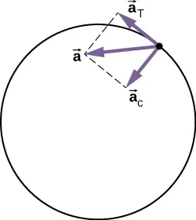
Example 4.12 Total Acceleration during Circular Motion
A particle moves in a circle of radius r = 2.0 m. During the time interval from t = 1.5 s to t = 4.0 s its speed varies with time according to
What is the total acceleration of the particle at t = 2.0 s?
Strategy
We are given the speed of the particle and the radius of the circle, so we can calculate centripetal acceleration easily. The direction of the centripetal acceleration is toward the center of the circle. We find the magnitude of the tangential acceleration by taking the derivative with respect to time of \(|v(t)|\) using Equation 4.31 and evaluating it at t = 2.0 s. We use this and the magnitude of the centripetal acceleration to find the total acceleration.
Solution
Centripetal acceleration is
directed toward the center of the circle. Tangential acceleration is
Total acceleration is
and \(\theta=\tan^{-1}\frac{3.1}{1.5}=64{}^{\circ}\) from the tangent to the circle. See Figure 4.23.
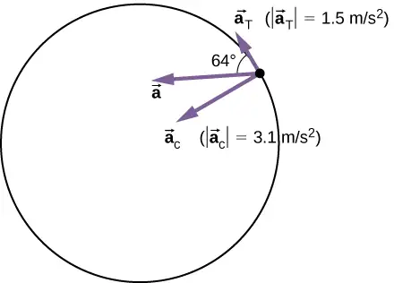
Significance
The directions of centripetal and tangential accelerations can be described more conveniently in terms of a polar coordinate system, with unit vectors in the radial and tangential directions. This coordinate system, which is used for motion along curved paths, is discussed in detail later in the book.
4.5 Relative Motion in One and Two Dimensions¶
Learning Objectives
By the end of this section, you will be able to:
- Explain the concept of reference frames.
- Write the position and velocity vector equations for relative motion.
- Draw the position and velocity vectors for relative motion.
- Analyze one-dimensional and two-dimensional relative motion problems using the position and velocity vector equations.
Motion does not happen in isolation. If you’re riding in a train moving at 10 m/s east, this velocity is measured relative to the ground on which you’re traveling. However, if another train passes you at 15 m/s east, your velocity relative to this other train is different from your velocity relative to the ground. Your velocity relative to the other train is 5 m/s west. To explore this idea further, we first need to establish some terminology.
Reference Frames¶
To discuss relative motion in one or more dimensions, we first introduce the concept of reference frames. When we say an object has a certain velocity, we must state it has a velocity with respect to a given reference frame. In most examples we have examined so far, this reference frame has been Earth. If you say a person is sitting in a train moving at 10 m/s east, then you imply the person on the train is moving relative to the surface of Earth at this velocity, and Earth is the reference frame. We can expand our view of the motion of the person on the train and say Earth is spinning in its orbit around the Sun, in which case the motion becomes more complicated. In this case, the solar system is the reference frame. In summary, all discussion of relative motion must define the reference frames involved. We now develop a method to refer to reference frames in relative motion. This method makes an approximation that breaks down near the speed of light, where the more accurate methods or special relativity are needed, but is extremely accurate for everyday speeds (Relativity).
Relative Motion in One Dimension¶
We introduce relative motion in one dimension first, because the velocity vectors simplify to having only two possible directions. Take the example of the person sitting in a train moving east. If we choose east as the positive direction and Earth as the reference frame, then we can write the velocity of the train with respect to the Earth as \({\mathbf{\vec{v}}}_{\text{TE}}=10\:\text{m}\text{/}\text{s}\:\mathbf{\hat{i}}\) east, where the subscripts TE refer to train and Earth. Let’s now say the person gets up out of her seat and walks toward the back of the train at 2 m/s. This tells us she has a velocity relative to the reference frame of the train. Since the person is walking west, in the negative direction, we write her velocity with respect to the train as \({\mathbf{\vec{v}}}_{\text{PT}}=-2\:\text{m}\text{/}\text{s}\:\mathbf{\hat{i}}.\) We can add the two velocity vectors to find the velocity of the person with respect to Earth. This relative velocity is written as
Note the ordering of the subscripts for the various reference frames in Equation 4.33. The subscripts for the coupling reference frame, which is the train, appear consecutively in the right-hand side of the equation. Figure 4.24 shows the correct order of subscripts when forming the vector equation.
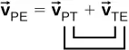
Adding the vectors, we find \({\mathbf{\vec{v}}}_{\text{PE}}=8\:\text{m}\text{/}\text{s}\:\mathbf{\hat{i}}{,}\) so the person is moving 8 m/s east with respect to Earth. Graphically, this is shown in Figure 4.25.
![Velocity vectors of the train with respect to Earth, person with respect to the train, and person with respect to Earth. V sub T E is the velocity vector of the train with respect to Earth. It has value 10 meters per second and is represented as a long green arrow pointing to the right. V sub P T is the velocity vector of the person with respect to the train. It has value -2 meters per second and is represented as a short green arrow pointing to the left. V sub P E is the velocity vector of the person with respect to Earth. It has value 8 meters per second and is represented as a medium length green arrow pointing to the right.](img/cnx-uphysics-04-05-train-replaced.webp)
Relative Velocity in Two Dimensions¶
We can now apply these concepts to describing motion in two dimensions. Consider a particle P and reference frames S and \(S',\) as shown in Figure 4.26. The position of the origin of \(S'\) as measured in S is \({\mathbf{\vec{r}}}_{S'S},\) the position of P as measured in \(S'\) is \({\mathbf{\vec{r}}}_{PS'},\) and the position of P as measured in S is \({\mathbf{\vec{r}}}_{PS}.\)
![An x y z coordinate system is shown and labeled as system S. A second coordinate system, S prime with axes x prime, y prime, z prime, is shifted relative to S. The vector r sub S prime S, shown as a purple arrow, extends from the origin of S to the origin of S prime. Vector r sub P S is a vector from the origin of S to a point P. Vector r sub P S prime is a vector from the origin of S prime to the same point P. The vectors r s prime s, r P S prime, and r P S form a triangle, and r P S is the vector sum of r S prime S and r P S prime.](img/cnx-uphysics-04-05-posvect.webp)
From Figure 4.26 we see that
equation callout
The relative velocities are the time derivatives of the position vectors. Therefore,
equation callout
The velocity of a particle relative to S is equal to its velocity relative to \(S'\) plus the velocity of \(S'\) relative to S.
We can extend Equation 4.35 to any number of reference frames. For particle P with velocities \({\mathbf{\vec{v}}}_{PA},{\mathbf{\vec{v}}}_{PB}{,}\:\text{and}\:{\mathbf{\vec{v}}}_{PC}\) in frames A, B, and C,
equation callout
We can also see how the accelerations are related as observed in two reference frames by differentiating Equation 4.35:
equation callout
We see that if the velocity of \(S'\) relative to S is a constant, then \({\mathbf{\mathbf{\vec{a}}}}_{S'S}=0\) and
This says the acceleration of a particle is the same as measured by two observers moving at a constant velocity relative to each other.
Example 4.13 Motion of a Car Relative to a Truck
A truck is traveling south at a speed of 70 km/h toward an intersection. A car is traveling east toward the intersection at a speed of 80 km/h (Figure 4.27). What is the velocity of the car relative to the truck?
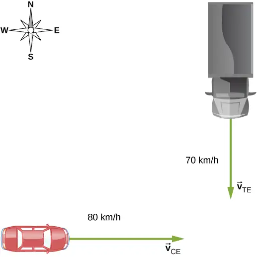
Strategy
First, we must establish the reference frame common to both vehicles, which is Earth. Then, we write the velocities of each with respect to the reference frame of Earth, which enables us to form a vector equation that links the car, the truck, and Earth to solve for the velocity of the car with respect to the truck.
Solution
The velocity of the car with respect to Earth is \({\mathbf{\vec{v}}}_{\text{CE}}=80\:\text{km}\text{/}\text{h}\:\mathbf{\hat{i}}.\) The velocity of the truck with respect to Earth is \({\mathbf{\vec{v}}}_{\text{TE}}=-70\:\text{km}\text{/}\text{h}\:\mathbf{\hat{j}}.\) Using the velocity addition rule, the relative motion equation we are seeking is
Here, \({\mathbf{\vec{v}}}_{\text{CT}}\) is the velocity of the car with respect to the truck, and Earth is the connecting reference frame. Since we have the velocity of the truck with respect to Earth, the negative of this vector is the velocity of Earth with respect to the truck: \({\mathbf{\vec{v}}}_{\text{ET}}=-{\mathbf{\vec{v}}}_{\text{TE}}.\) The vector diagram of this equation is shown in Figure 4.28.
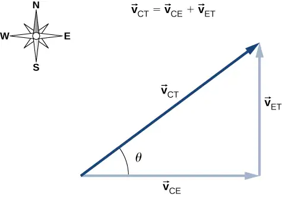
We can now solve for the velocity of the car with respect to the truck:
and
Significance
Drawing a vector diagram showing the velocity vectors can help in understanding the relative velocity of the two objects.
Check Your Understanding
A boat heads due north, moving at 4.5 m/s relative to the water of a river that is running east at 3.0 m/s. What is the velocity of the boat with respect to Earth?
Answer
Labeling subscripts for the vector equation, we have B = boat, R = river, and E = Earth. The vector equation becomes \({\mathbf{\vec{v}}}_{\text{BE}}={\mathbf{\vec{v}}}_{\text{BR}}+{\mathbf{\vec{v}}}_{\text{RE}}.\) We have right triangle geometry shown in Figure 04_05_BoatRiv_img. Solving for \({\mathbf{\vec{v}}}_{\text{BE}}\), we have
\(v_{\text{BE}}=\sqrt{v_{\text{BR}}^{2}+v_{\text{RE}}^{2}}=\sqrt{{4.5}^{2}+{3.0}^{2}}\)
\(v_{\text{BE}}=5.4\:\text{m}\text{/}\text{s,}\ \theta=\tan^{-1}\left( \frac{3.0}{4.5} \right)=33.7{}^{\circ}.\)
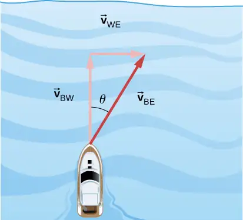
Example 4.14 Flying a Plane in a Wind
A pilot must fly a plane due north to reach their destination. The plane can fly at 300 km/h in still air. A wind is blowing out of the northeast at 90 km/h. (a) In what direction must the pilot head the plane to fly due north? (b) What is the speed of the plane relative to the ground?
Strategy
The pilot must point the plane somewhat east of north to compensate for the wind velocity. We need to construct a vector equation that contains the velocity of the plane with respect to the ground, the velocity of the plane with respect to the air, and the velocity of the air with respect to the ground. Since these last two quantities are known, we can solve for the velocity of the plane with respect to the ground. We can graph the vectors and use this diagram to evaluate the magnitude of the plane’s velocity with respect to the ground. The diagram will also tell us the angle the plane’s velocity makes with north with respect to the air, which is the direction the pilot must head the plane.
Solution
The vector equation is \({\mathbf{\vec{v}}}_{\text{PG}}={\mathbf{\vec{v}}}_{\text{PA}}+{\mathbf{\vec{v}}}_{\text{AG}},\) where P = plane, A = air, and G = ground. From the geometry in Figure 4.29, we can solve easily for the magnitude of the velocity of the plane with respect to the ground and the angle of the plane’s heading, \(\theta.\)
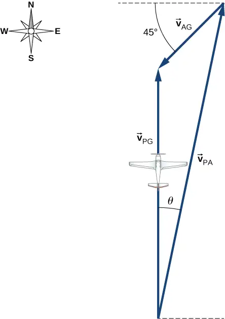
Known quantities:
(a) In the x direction we have the following:
- \(|{\mathbf{\vec{v}}}_{\text{PA}}|\sin\,\theta\:-|{\mathbf{\vec{v}}}_{\text{AG}}|\sin\,45{}^{\circ}=0\)
- \(\theta=\sin^{-1}(90\:\text{km/h})\left( \frac{\sin\,45{}^{\circ}}{300\:\text{km/h}} \right)\)
- \(\theta=12{}^{\circ}\) east of north
(b) In the y direction we have the following:
- \(|{\mathbf{\vec{v}}}_{\text{PG}}|=|{\mathbf{\vec{v}}}_{\text{PA}}|\cos\,\theta\:-|{\mathbf{\vec{v}}}_{\text{AG}}|\cos\,45{}^{\circ}\)
- \(|{\mathbf{\vec{v}}}_{\text{PG}}|=(300\:\text{km/h})(\cos\,12{}^{\circ})-(90\:\text{km/h})(\cos\,45{}^{\circ})\)
- \(|{\mathbf{\vec{v}}}_{\text{PG}}|=230\:\text{km/h}\)
Chapter Review¶
Key Terms¶
- acceleration vector
- instantaneous acceleration found by taking the derivative of the velocity function with respect to time in unit vector notation
- angular frequency
- \(\omega,\) rate of change of an angle with which an object that is moving on a circular path
- centripetal acceleration
- component of acceleration of an object moving in a circle that is directed radially inward toward the center of the circle
- displacement vector
- vector from the initial position to a final position on a trajectory of a particle
- position vector
- vector from the origin of a chosen coordinate system to the position of a particle in two- or three-dimensional space
- projectile motion
- motion of an object subject only to the acceleration of gravity
- range
- maximum horizontal distance a projectile travels
- reference frame
- coordinate system in which the position, velocity, and acceleration of an object at rest or moving is measured
- relative velocity
- velocity of an object as observed from a particular reference frame, or the velocity of one reference frame with respect to another reference frame
- tangential acceleration
- magnitude of which is the time rate of change of speed. Its direction is tangent to the circle.
- time of flight
- elapsed time a projectile is in the air
- total acceleration
- vector sum of centripetal and tangential accelerations
- trajectory
- path of a projectile through the air
- velocity vector
- vector that gives the instantaneous speed and direction of a particle; tangent to the trajectory
Key Equations¶
| Position vector | \(\mathbf{\vec{r}}(t)=x(t)\mathbf{\hat{i}}+y(t)\mathbf{\hat{j}}+z(t)\mathbf{\hat{k}}\) |
| Displacement vector | \(\Delta\mathbf{\vec{r}}=\mathbf{\vec{r}}(t_{2})-\mathbf{\vec{r}}(t_{1})\) |
| Velocity vector | \(\mathbf{\vec{v}}(t)=\lim_{\Delta t\rightarrow 0}\frac{\mathbf{\vec{r}}(t+\Delta t)-\mathbf{\vec{r}}(t)}{\Delta t}=\frac{d\mathbf{\vec{r}}}{dt}\) |
| Velocity in terms of components | \(\mathbf{\vec{v}}(t)=v_{x}(t)\mathbf{\hat{i}}+v_{y}(t)\mathbf{\hat{j}}+v_{z}(t)\mathbf{\hat{k}}\) |
| Velocity components | \(v_{x}(t)=\frac{dx(t)}{dt}\;v_{y}(t)=\frac{dy(t)}{dt}\;v_{z}(t)=\frac{dz(t)}{dt}\) |
| Average velocity | \({\mathbf{\vec{v}}}_{\text{avg}}=\frac{\mathbf{\vec{r}}(t_{2})-\mathbf{\vec{r}}(t_{1})}{t_{2}-t_{1}}\) |
| Instantaneous acceleration | \(\mathbf{\vec{a}}(t)=\lim_{t\rightarrow 0}\frac{\mathbf{\vec{v}}(t+\Delta t)-\mathbf{\vec{v}}(t)}{\Delta t}=\frac{d\mathbf{\vec{v}}(t)}{dt}\) |
| Instantaneous acceleration, component form | \(\mathbf{\vec{a}}(t)=\frac{dv_{x}(t)}{dt}\mathbf{\hat{i}}+\frac{dv_{y}(t)}{dt}\mathbf{\hat{j}}+\frac{dv_{z}(t)}{dt}\mathbf{\hat{k}}\) |
| Instantaneous acceleration as second derivatives of position |
\(\mathbf{\vec{a}}(t)=\frac{d^{2}x(t)}{dt^{2}}\mathbf{\hat{i}}+\frac{d^{2}y(t)}{dt^{2}}\mathbf{\hat{j}}+\frac{d^{2}z(t)}{dt^{2}}\mathbf{\hat{k}}\) |
| Time of flight | \(T_{\text{tof}}=\frac{2(v_{0}\sin\theta_{0})}{g}\) |
| Trajectory | \(y=(\tan\theta_{0})x-\left[ \frac{g}{2{(v_{0}\cos\theta_{0})}^{2}} \right]x^{2}\) |
| Range | \(R=\frac{v_{0}^{2}\sin\:2\theta_{0}}{g}\) |
| Centripetal acceleration | \(a_{\text{C}}=\frac{v^{2}}{r}\) |
| Position vector, uniform circular motion | \(\mathbf{\vec{r}}(t)=A\cos\:\omega t\:\mathbf{\hat{i}}+A\:\sin\:\omega t\mathbf{\hat{j}}\) |
| Velocity vector, uniform circular motion | \(\mathbf{\vec{v}}(t)=\frac{d\mathbf{\vec{r}}(t)}{dt}=-A\omega\:\sin\:\omega t\mathbf{\hat{i}}+A\omega\:\cos\:\omega t\mathbf{\hat{j}}\) |
| Acceleration vector, uniform circular motion | \(\mathbf{\vec{a}}(t)=\frac{d\mathbf{\vec{v}}(t)}{dt}=-A\omega^{2}\:\cos\:\omega t\mathbf{\hat{i}}-A\omega^{2}\:\sin\:\omega t\mathbf{\hat{j}}\) |
| Tangential acceleration | \(a_{\text{T}}=\frac{d|\mathbf{\vec{v}}|}{dt}\) |
| Total acceleration | \(\mathbf{\vec{a}}={\mathbf{\vec{a}}}_{\text{C}}+{\mathbf{\vec{a}}}_{\text{T}}\) |
| Position vector in frame S is the position vector in frame \(S'\) plus the vector from the origin of S to the origin of \(S'\) |
\({\mathbf{\vec{r}}}_{PS}={\mathbf{\vec{r}}}_{PS'}+{\mathbf{\vec{r}}}_{S'S}\) |
| Relative velocity equation connecting two reference frames |
\({\mathbf{\vec{v}}}_{PS}={\mathbf{\vec{v}}}_{PS'}+{\mathbf{\vec{v}}}_{S'S}\) |
| Relative velocity equation connecting more than two reference frames |
\({\mathbf{\vec{v}}}_{PC}={\mathbf{\vec{v}}}_{PA}+{\mathbf{\vec{v}}}_{AB}+{\mathbf{\vec{v}}}_{BC}\) |
| Relative acceleration equation | \({\mathbf{\vec{a}}}_{PS}={\mathbf{\vec{a}}}_{PS'}+{\mathbf{\vec{a}}}_{S'S}\) |
Summary¶
4.1 Displacement and Velocity Vectors¶
- The position function \(\mathbf{\vec{r}}(t)\) gives the position as a function of time of a particle moving in two or three dimensions. Graphically, it is a vector from the origin of a chosen coordinate system to the point where the particle is located at a specific time.
- The displacement vector \(\Delta\mathbf{\vec{r}}\) gives the shortest distance between any two points on the trajectory of a particle in two or three dimensions.
- Instantaneous velocity gives the speed and direction of a particle at a specific time on its trajectory in two or three dimensions, and is a vector in two and three dimensions.
- The velocity vector is tangent to the trajectory of the particle.
- Displacement \(\mathbf{\vec{r}}(t)\) can be written as a vector sum of the one-dimensional displacements \(\vec{x}(t),\vec{y}(t),\vec{z}(t)\) along the x, y, and z directions.
- Velocity \(\mathbf{\vec{v}}(t)\) can be written as a vector sum of the one-dimensional velocities \(v_{x}(t),v_{y}(t),v_{z}(t)\) along the x, y, and z directions.
- Motion in any given direction is independent of motion in a perpendicular direction.
4.2 Acceleration Vector¶
- In two and three dimensions, the acceleration vector can have an arbitrary direction and does not necessarily point along a given component of the velocity.
- The instantaneous acceleration is produced by a change in velocity taken over a very short (infinitesimal) time period. Instantaneous acceleration is a vector in two or three dimensions. It is found by taking the derivative of the velocity function with respect to time.
- In three dimensions, acceleration \(\mathbf{\vec{a}}(t)\) can be written as a vector sum of the one-dimensional accelerations \(a_{x}(t),a_{y}(t),\text{and}\:a_{z}(t)\) along the x-, y-, and z-axes.
- The kinematic equations for constant acceleration can be written as the vector sum of the constant acceleration equations in the x, y, and z directions.
4.3 Projectile Motion¶
-
Projectile motion is the motion of an object subject only to the acceleration of gravity, where the acceleration is constant, as near the surface of Earth.
-
To solve projectile motion problems, we analyze the motion of the projectile in the horizontal and vertical directions using the one-dimensional kinematic equations for x and y.
-
The time of flight of a projectile launched with initial vertical velocity \(v_{0y}\) on an even surface is given by
\[ T_{tof}=\frac{2(v_{0}\sin\,\theta)}{g}. \]This equation is valid only when the projectile lands at the same elevation from which it was launched.
-
The maximum horizontal distance traveled by a projectile is called the range. Again, the equation for range is valid only when the projectile lands at the same elevation from which it was launched.
4.4 Uniform and Nonuniform Circular Motion¶
- Uniform circular motion is motion in a circle at constant speed.
- Centripetal acceleration \({\mathbf{\vec{a}}}_{\text{C}}\) is the acceleration a particle must have to follow a circular path. Centripetal acceleration always points toward the center of rotation and has magnitude \(a_{\text{C}}=v^{2}\text{/}r.\)
- Nonuniform circular motion occurs when there is tangential acceleration of an object executing circular motion such that the speed of the object is changing. This acceleration is called tangential acceleration \({\mathbf{\vec{a}}}_{\text{T}}.\) The magnitude of tangential acceleration is the time rate of change of the magnitude of the velocity. The tangential acceleration vector is tangential to the circle, whereas the centripetal acceleration vector points radially inward toward the center of the circle. The total acceleration is the vector sum of tangential and centripetal accelerations.
- An object executing uniform circular motion can be described with equations of motion. The position vector of the object is \(\mathbf{\vec{r}}(t)=A\:\cos\:\omega t\mathbf{\hat{i}}+A\:\sin\:\omega t\mathbf{\hat{j}},\) where A is the magnitude \(|\mathbf{\vec{r}}(t)|,\) which is also the radius of the circle, and \(\omega\) is the angular frequency.
4.5 Relative Motion in One and Two Dimensions¶
- When analyzing motion of an object, the reference frame in terms of position, velocity, and acceleration needs to be specified.
- Relative velocity is the velocity of an object as observed from a particular reference frame, and it varies with the choice of reference frame.
- If S and \(S'\) are two reference frames moving relative to each other at a constant velocity, then the velocity of an object relative to S is equal to its velocity relative to \(S'\) plus the velocity of \(S'\) relative to S.
- If two reference frames are moving relative to each other at a constant velocity, then the accelerations of an object as observed in both reference frames are equal.
Conceptual Questions¶
4.1 Displacement and Velocity Vectors¶
1. What form does the trajectory of a particle have if the distance from any point A to point B is equal to the magnitude of the displacement from A to B?
Answer
straight line
2. Give an example of a trajectory in two or three dimensions caused by independent perpendicular motions.
3. If the instantaneous velocity is zero, what can be said about the slope of the position function?
Answer
The slope must be zero because the velocity vector is tangent to the graph of the position function.
4.2 Acceleration Vector¶
4. If the position function of a particle is a linear function of time, what can be said about its acceleration?
5. If an object has a constant x-component of the velocity and suddenly experiences an acceleration in the y direction, does the x-component of its velocity change?
Answer
No, motions in perpendicular directions are independent.
6. If an object has a constant x-component of velocity and suddenly experiences an acceleration at an angle of \(70{}^{\circ}\) in the x direction, does the x-component of velocity change?
4.3 Projectile Motion¶
7. Answer the following questions for projectile motion on level ground assuming negligible air resistance, with the initial angle being neither \(0{}^{\circ}\) nor \(90{}^{\circ}:\) (a) Is the velocity ever zero? (b) When is the velocity a minimum? A maximum? (c) Can the velocity ever be the same as the initial velocity at a time other than at t = 0? (d) Can the speed ever be the same as the initial speed at a time other than at t = 0?
Answer
a. no; b. minimum at apex of trajectory and maximum at launch and impact; c. no, velocity is a vector; d. yes, where it lands
8. Answer the following questions for projectile motion on level ground assuming negligible air resistance, with the initial angle being neither \(0{}^{\circ}\) nor \(90{}^{\circ}:\) (a) Is the acceleration ever zero? (b) Is the vector \(\mathbf{\vec{v}}\) ever parallel or antiparallel to the vector \(\mathbf{\vec{a}}\)? (c) Is the vector v ever perpendicular to the vector a? If so, where is this located?
9. A dime is placed at the edge of a table so it hangs over slightly. A quarter is slid horizontally on the table surface perpendicular to the edge and hits the dime head on. Which coin hits the ground first?
Answer
They both hit the ground at the same time.
4.4 Uniform and Nonuniform Circular Motion¶
10. Can centripetal acceleration change the speed of a particle undergoing circular motion?
11. Can tangential acceleration change the speed of a particle undergoing circular motion?
Answer
yes
4.5 Relative Motion in One and Two Dimensions¶
12. What frame or frames of reference do you use instinctively when driving a car? When flying in a commercial jet?
13. A basketball player dribbling down the court usually keeps his eyes fixed on the players around him. He is moving fast. Why doesn’t he need to keep his eyes on the ball?
Answer
If he is going to pass the ball to another player, he needs to keep his eyes on the reference frame in which the other players on the team are located.
14. If someone is riding in the back of a pickup truck and throws a softball straight backward, is it possible for the ball to fall straight down as viewed by a person standing at the side of the road? Under what condition would this occur? How would the motion of the ball appear to the person who threw it?
15. The hat of a jogger running at constant velocity falls off the back of his head. Draw a sketch showing the path of the hat in the jogger’s frame of reference. Draw its path as viewed by a stationary observer. Neglect air resistance.
Answer
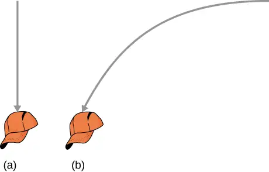
16. A clod of dirt falls from the bed of a moving truck. It strikes the ground directly below the end of the truck. (a) What is the direction of its velocity relative to the truck just before it hits? (b) Is this the same as the direction of its velocity relative to ground just before it hits? Explain your answers.
Problems¶
4.1 Displacement and Velocity Vectors¶
17. The coordinates of a particle in a rectangular coordinate system are (1.0, –4.0, 6.0). What is the position vector of the particle?
Answer
\(\mathbf{\vec{r}}=1.0\mathbf{\hat{i}}-4.0\mathbf{\hat{j}}+6.0\mathbf{\hat{k}}\)
18. The position of a particle changes from \({\mathbf{\vec{r}}}_{1}=(2.0\mathbf{\hat{i}}+3.0\mathbf{\hat{j}})\text{cm}\) to \({\mathbf{\vec{r}}}_{2}=(-4.0\mathbf{\hat{i}}+3.0\mathbf{\hat{j}})\:\text{cm}.\) What is the particle’s displacement?
19. The 18th hole at Pebble Beach Golf Course is a dogleg to the left of length 496.0 m. The fairway off the tee is taken to be the x direction. A golfer hits his tee shot a distance of 300.0 m, corresponding to a displacement \(\Delta{\mathbf{\vec{r}}}_{1}=300.0\:\text{m}\mathbf{\hat{i}},\) and hits his second shot 189.0 m with a displacement \(\Delta{\mathbf{\vec{r}}}_{2}=172.0\:\text{m}\mathbf{\hat{i}}+80.3\:\text{m}\mathbf{\hat{j}}.\) What is the final displacement of the golf ball from where it started?
Answer
\(\Delta{\mathbf{\vec{r}}}_{\text{Total}}=472.0\:\text{m}\mathbf{\hat{i}}+80.3\:\text{m}\mathbf{\hat{j}}\)
20. A bird flies straight northeast a distance of 95.0 km for 3.0 h. With the x-axis due east and the y-axis due north, what is the displacement in unit vector notation for the bird? What is the average velocity for the trip?
21. A cyclist rides 5.0 km due east, then 10.0 km \(20{}^{\circ}\) west of north. From this point she rides 8.0 km due west. What is the final displacement from where the cyclist started?
Answer
\(\text{Sum of displacements}=-6.4\:\text{km}\mathbf{\hat{i}}+9.4\:\text{km}\mathbf{\hat{j}}\)
22. New York Rangers defenseman Daniel Girardi stands at the goal and passes a hockey puck 20 m and \(45{}^{\circ}\) from straight down the ice to left wing Chris Kreider waiting at the blue line. Kreider waits for Girardi to reach the blue line and passes the puck directly across the ice to him 10 m away. What is the final displacement of the puck? See the following figure.
![An illustration of the situation described in the problem. The goal and the two ice hockey players are drawn as viewed from above. The goal and Girardi are at the origin of an x y coordinate system. A gray arrow representing 20 meters at 45 degrees from the positive x direction is shown, with Kreider drawn near the tip of the arrow. A blue line, parallel to the x axis, is also drawn at the tip of this arrow. A second gray arrow is shown starting at the Kreider’s location, pointing horizontally to the left, and representing a distance of 10 meters. A dark blue arrow is drawn from the goal at the origin to the tip of the second, 10 meter, gray arrow.](img/cnx-uphysics-04-01-puck-img.webp)
23. The position of a particle is \(\mathbf{\vec{r}}(t)=4.0t^{2}\mathbf{\hat{i}}-3.0\mathbf{\hat{j}}+2.0t^{3}\mathbf{\hat{k}}\text{m}.\) (a) What is the velocity of the particle at 0 s and at \(1.0\) s? (b) What is the average velocity between 0 s and \(1.0\) s?
Answer
a. \(\mathbf{\vec{v}}(t)=8.0t\mathbf{\hat{i}}+6.0t^{2}\mathbf{\hat{k}},\quad\mathbf{\vec{v}}(0)=0,\quad\mathbf{\vec{v}}(1.0)=8.0\mathbf{\hat{i}}+6.0\mathbf{\hat{k}}\text{m/s}\),
b. \({\mathbf{\vec{v}}}_{\text{avg}}=4.0\mathbf{\hat{i}}+2.0\mathbf{\hat{k}}\:\text{m/s}\)
24. Clay Matthews, a linebacker for the Green Bay Packers, can reach a speed of 10.0 m/s. At the start of a play, Matthews runs downfield at \(45{}^{\circ}\) with respect to the 50-yard line and covers 8.0 m in 1 s. He then runs straight down the field at \(90{}^{\circ}\) with respect to the 50-yard line for 12 m, with an elapsed time of 1.2 s. (a) What is Matthews’ final displacement from the start of the play? (b) What is his average velocity?
25. The F-35B Lighting II is a short-takeoff and vertical landing fighter jet. If it does a vertical takeoff to 20.00-m height above the ground and then follows a flight path angled at \(30{}^{\circ}\) with respect to the ground for 20.00 km, what is the final displacement?
Answer
\(\Delta{\mathbf{\vec{r}}}_{1}=20.00\:\text{m}\mathbf{\hat{j}},\Delta{\mathbf{\vec{r}}}_{2}=(2.000\:\times\:{10}^{4}\text{m})\:(\cos 30{}^{\circ}\mathbf{\hat{i}}+\sin\:30{}^{\circ}\mathbf{\hat{j}})\)
\(\Delta\mathbf{\vec{r}}=1.700\:\times\:{10}^{4}\text{m}\mathbf{\hat{i}}+1.002\:\times\:{10}^{4}\text{m}\mathbf{\hat{j}}\)
4.2 Acceleration Vector¶
26. The position of a particle is \(\mathbf{\vec{r}}(t)=(3.0t^{2}\mathbf{\hat{i}}+5.0\mathbf{\hat{j}}-6.0t\mathbf{\hat{k}})\:\text{m}.\) (a) Determine its velocity and acceleration as functions of time. (b) What are its velocity and acceleration at time t = 0?
27. A particle’s acceleration is \((4.0\mathbf{\hat{i}}+3.0\mathbf{\hat{j}})\text{m/}\text{s}^{2}.\) At t = 0, its position and velocity are zero. (a) What are the particle’s position and velocity as functions of time? (b) Find the equation of the path of the particle. Draw the x- and y-axes and sketch the trajectory of the particle.
Answer
a. \(\mathbf{\vec{v}}(t)=(4.0t\mathbf{\hat{i}}+3.0t\mathbf{\hat{j}})\text{m/s},\) \(\mathbf{\vec{r}}(t)=(2.0t^{2}\mathbf{\hat{i}}+\frac{3}{2}t^{2}\mathbf{\hat{j}})\:\text{m}\),
b. \(x(t)=2.0t^{2}\text{m,}\:y(t)=\frac{3}{2}t^{2}\text{m,}\:t^{2}=\frac{x}{2}\Rightarrow y=\frac{3}{4}x\)
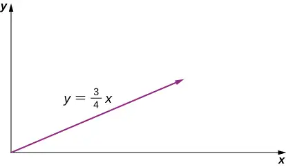
28. A boat leaves the dock at t = 0 and heads out into a lake with an acceleration of \(2.0\:\text{m/}\text{s}^{2}\mathbf{\hat{i}}.\) A strong wind is pushing the boat, giving it an additional velocity of \(2.0\:\text{m/s}\mathbf{\hat{i}}+1.0\:\text{m/s}\mathbf{\hat{j}}.\) (a) What is the velocity of the boat at t = 10 s? (b) What is the position of the boat at t = 10s? Draw a sketch of the boat’s trajectory and position at t = 10 s, showing the x- and y-axes.
29. The position of a particle for t > 0 is given by \(\mathbf{\vec{r}}(t)=(3.0t^{2}\mathbf{\hat{i}}-7.0t^{3}\mathbf{\hat{j}}-5.0t^{-2}\mathbf{\hat{k}})\:\text{m}.\) (a) What is the velocity as a function of time? (b) What is the acceleration as a function of time? (c) What is the particle’s velocity at t = 2.0 s? (d) What is its speed at t = 1.0 s and t = 3.0 s? (e) What is the average velocity between t = 1.0 s and t = 2.0 s?
Answer
a. \(\mathbf{\vec{v}}(t)=(6.0t\mathbf{\hat{i}}-21.0t^{2}\mathbf{\hat{j}}+10.0t^{-3}\mathbf{\hat{k}})\text{m/s}\)
b. \(\mathbf{\vec{a}}(t)=(6.0\mathbf{\hat{i}}-42.0t\mathbf{\hat{j}}-30t^{-4}\mathbf{\hat{k}})\text{m/}\text{s}^{2}\)
c. \(\mathbf{\vec{v}}(2.0s)=(12.0\mathbf{\hat{i}}-84.0\mathbf{\hat{j}}+1.25\mathbf{\hat{k}})\text{m/s}\)
d. \(\mathbf{\vec{v}}(1.0\:\text{s})=6.0\mathbf{\hat{i}}-21.0\mathbf{\hat{j}}+10.0\mathbf{\hat{k}}\text{m/s},\:|\mathbf{\vec{v}}(1.0\:\text{s})|=24.0\:\text{m/s}\)
\(\mathbf{\vec{v}}(3.0\:\text{s})=18.0\mathbf{\hat{i}}-189.0\mathbf{\hat{j}}+0.37\mathbf{\hat{k}}\text{m/s},\), \(|\mathbf{\vec{v}}(3.0\:\text{s})|=190\:\text{m/s}\)
e. \(\mathbf{\vec{r}}(t)=(3.0t^{2}\mathbf{\hat{i}}-7.0t^{3}\mathbf{\hat{j}}-5.0t^{-2}\mathbf{\hat{k}})\text{m}\), \({\mathbf{\vec{v}}}_{\text{avg}}=9.0\mathbf{\hat{i}}-49.0\mathbf{\hat{j}}+3.75\mathbf{\hat{k}}\text{m/s}\)
30. The acceleration of a particle is a constant. At t = 0 the velocity of the particle is \((10\mathbf{\hat{i}}+20\mathbf{\hat{j}})\text{m/s}.\) At t = 4 s the velocity is \(10\mathbf{\hat{j}}\text{m/s}.\) (a) What is the particle’s acceleration? (b) How do the position and velocity vary with time? Assume the particle is initially at the origin.
31. A particle has a position function \(\mathbf{\vec{r}}(t)=\cos(1.0t)\mathbf{\hat{i}}+\sin(1.0t)\mathbf{\hat{j}}+t\mathbf{\hat{k}},\) where the arguments of the cosine and sine functions are in radians. (a) What is the velocity vector? (b) What is the acceleration vector?
Answer
a. \(\mathbf{\vec{v}}(t)=\text{−sin}(1.0t)\mathbf{\hat{i}}+\cos(1.0t)\mathbf{\hat{j}}+\mathbf{\hat{k}}\), b. \(\mathbf{\vec{a}}(t)=\text{−cos}(1.0t)\mathbf{\hat{i}}-\sin(1.0t)\mathbf{\hat{j}}\)
32. A Lockheed Martin F-35 II Lighting jet takes off from an aircraft carrier with a runway length of 90 m and a takeoff speed 70 m/s at the end of the runway. Jets are catapulted into airspace from the deck of an aircraft carrier with two sources of propulsion: the jet propulsion and the catapult. At the point of leaving the deck of the aircraft carrier, the F-35’s acceleration decreases to a constant acceleration of \(5.0\:\text{m/}\text{s}^{2}\) at \(30{}^{\circ}\) with respect to the horizontal. (a) What is the initial acceleration of the F-35 on the deck of the aircraft carrier to make it airborne? (b) Write the position and velocity of the F-35 in unit vector notation from the point it leaves the deck of the aircraft carrier. (c) At what altitude is the fighter 5.0 s after it leaves the deck of the aircraft carrier? (d) What is its velocity and speed at this time? (e) How far has it traveled horizontally?
4.3 Projectile Motion¶
33. A bullet is shot horizontally from shoulder height (1.5 m) with an initial speed 200 m/s. (a) How much time elapses before the bullet hits the ground? (b) How far does the bullet travel horizontally?
Answer
a. \(t=0.55\:\text{s}\), b. \(x=110\:\text{m}\)
34. A marble rolls off a tabletop 1.0 m high and hits the floor at a point 3.0 m away from the table’s edge in the horizontal direction. (a) How long is the marble in the air? (b) What is the speed of the marble when it leaves the table’s edge? (c) What is its speed when it hits the floor?
35. A dart is thrown horizontally at a speed of 10 m/s at the bull’s-eye of a dartboard 2.4 m away, as in the following figure. (a) How far below the intended target does the dart hit? (b) What does your answer tell you about how proficient dart players throw their darts?
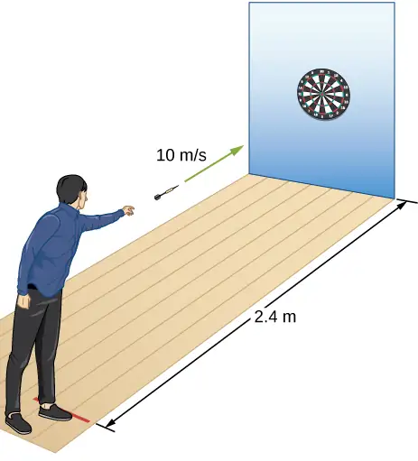
Answer
a. \(t=0.24\text{s,}\;d=0.28\:\text{m}\), b. They aim high.
36. An airplane flying horizontally with a speed of 500 km/h at a height of 800 m drops a crate of supplies (see the following figure). If the parachute fails to open, how far in front of the release point does the crate hit the ground?
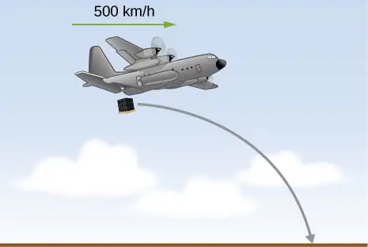
37. Suppose the airplane in the preceding problem fires a projectile horizontally in its direction of motion at a speed of 300 m/s relative to the plane. (a) How far in front of the release point does the projectile hit the ground? (b) What is its speed when it hits the ground?
Answer
a., \(t=12.8\:\text{s,}\;x=5619\:\text{m}\) b. \(v_{y}=125.0\:\text{m}\text{/}\text{s,}\;v_{x}=439.0\:\text{m}\text{/}\text{s,}\;|\vec{v}|=456.0\:\text{m}\text{/}\text{s}\)
38. A fastball pitcher can throw a baseball at a speed of 40 m/s (90 mi/h). (a) Assuming the pitcher can release the ball 16.7 m from home plate so the ball is moving horizontally, how long does it take the ball to reach home plate? (b) How far does the ball drop between the pitcher’s hand and home plate?
39. A projectile is launched at an angle of \(30{}^{\circ}\) and lands 20 s later at the same height as it was launched. (a) What is the initial speed of the projectile? (b) What is the maximum altitude? (c) What is the range? (d) Calculate the displacement from the point of launch to the position on its trajectory at 15 s.
Answer
a. \(v_{y}=v_{0y}-gt,\;t=10\text{s,}\;v_{y}=0,\;v_{0y}=98.0\:\text{m}\text{/}\text{s},\;v_{0}=196.0\:\text{m}\text{/}\text{s}\),
b. \(h=490.0\:\text{m},\)
c. \(v_{0x}=169.7\:\text{m}\text{/}\text{s,}\;x=3394.0\:\text{m,}\)
d. \(\begin{array}{c} x=169.7\:\text{m/s}\:(15.0\:\text{s})=2550\:\text{m} \\ y=(98.0\:\text{m/s}\:)\:(15.0\:\text{s})-4.9(15.0\text{s}{)}^{2}=368\:\text{m} \\ \mathbf{\overset{\text{r}}{s}}=2550\:\text{m}\mathbf{\hat{i}}+368\:\text{m}\mathbf{\hat{j}} \end{array}\)
40. A basketball player shoots toward a basket 6.1 m away and 3.0 m above the floor. If the ball is released 1.8 m above the floor at an angle of \(60{}^{\circ}\) above the horizontal, what must the initial speed be if it were to go through the basket?
41. At a particular instant, a hot air balloon is 100 m in the air and descending at a constant speed of 2.0 m/s. At this exact instant, a girl throws a ball horizontally, relative to herself, with an initial speed of 20 m/s. When she lands, where will she find the ball? Ignore air resistance.
Answer
\(-100\:\text{m}=(-2.0\:\text{m}\text{/}\text{s})t-(4.9\:\text{m}\text{/}\text{s}^{2})t^{2},\) \(t=4.3\:\text{s,}\) \(x=86.0\:\text{m}\)
42. A man on a motorcycle traveling at a uniform speed of 10 m/s throws an empty can straight upward relative to himself with an initial speed of 3.0 m/s. Find the equation of the trajectory as seen by a police officer on the side of the road. Assume the initial position of the can is the point where it is thrown. Ignore air resistance.
43. An athlete can jump a distance of 8.0 m in the broad jump. What is the maximum distance the athlete can jump on the Moon, where the gravitational acceleration is one-sixth that of Earth?
Answer
\(R_{Moon}=48\:\text{m}\)
44. The maximum horizontal distance a boy can throw a ball is 50 m. Assume he can throw with the same initial speed at all angles. How high does he throw the ball when he throws it straight upward?
45. A rock is thrown off a cliff at an angle of \(53{}^{\circ}\) with respect to the horizontal. The cliff is 100 m high. The initial speed of the rock is 30 m/s. (a) How high above the edge of the cliff does the rock rise? (b) How far has it moved horizontally when it is at maximum altitude? (c) How long after the release does it hit the ground? (d) What is the range of the rock? (e) What are the horizontal and vertical positions of the rock relative to the edge of the cliff at t = 2.0 s, t = 4.0 s, and t = 6.0 s?
Answer
a. \(v_{0y}=24\:\text{m}\text{/}\text{s}\) \(v_{y}^{2}=v_{0y}^{2}-2gy\Rightarrow h=29.3\:\text{m}\),
b. \(t=2.4\:\text{s}\;v_{0x}=18\:\text{m/s}\;x=43.2\:\text{m}\),
c. \(y=-100\:\text{m}\;y_{0}=0\) \(y-y_{0}=v_{0y}t-\frac{1}{2}gt^{2}\;-100=24t-4.9t^{2}\) \(\Rightarrow t=7.58\:\text{s}\),
d. \(x=136.44\:\text{m}\),
e. \(t=2.0\:\text{s}\;y=28.4\:\text{m}\;x=36\:\text{m}\)
\(t=4.0\:\text{s}\;y=17.6\:\text{m}\;x=72\:\text{m}\)
\(t=6.0\:\text{s}\;y=-32.4\:\text{m}\;x=108\:\text{m}\)
46. Trying to escape his pursuers, a secret agent skis off a slope inclined at \(30{}^{\circ}\) below the horizontal at 60 km/h. To survive and land on the snow 100 m below, he must clear a gorge 60 m wide. Does he make it? Ignore air resistance.
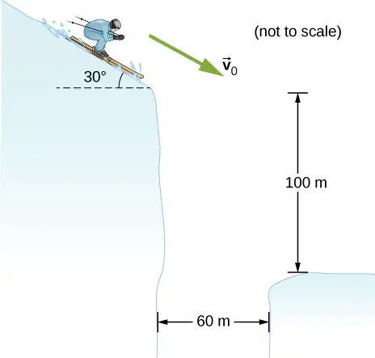
47. A golfer on a fairway is 70 m away from the green, which sits below the level of the fairway by 20 m. If the golfer hits the ball at an angle of \(40{}^{\circ}\) with an initial speed of 20 m/s, how close to the green does she come?
Answer
\(v_{0y}=12.9\:\text{m}\text{/}\text{s}\:y-y_{0}=v_{0y}t-\frac{1}{2}gt^{2}\;-20.0=12.9t-4.9t^{2}\)
\(t=3.7\:\text{s}\;v_{0x}=15.3\:\text{m}\text{/}\text{s}\Rightarrow x=56.7\:\text{m}\)
So the golfer’s shot lands 13.3 m short of the green.
48. A projectile is shot at a hill, the base of which is 300 m away. The projectile is shot at \(60{}^{\circ}\) above the horizontal with an initial speed of 75 m/s. The hill can be approximated by a plane sloped at \(20{}^{\circ}\) to the horizontal. Relative to the coordinate system shown in the following figure, the equation of this straight line is \(y=(\tan 20{}^{\circ})x-109.\) Where on the hill does the projectile land?
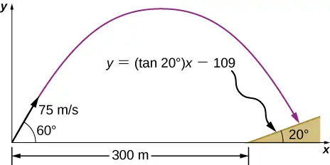
49. An astronaut on Mars kicks a soccer ball at an angle of \(45{}^{\circ}\) with an initial velocity of 15 m/s. If the acceleration of gravity on Mars is \(3.7\text{m/}\text{s}^{2}\), (a) what is the range of the soccer kick on a flat surface? (b) What would be the range of the same kick on the Moon, where gravity is one-sixth that of Earth?
Answer
a. \(R=60.8\:\text{m}\),
b. \(R=137.8\:\text{m}\)
50. Mike Powell holds the record for the long jump of 8.95 m, established in 1991. If he left the ground at an angle of \(15{}^{\circ},\) what was his initial speed?
51. MIT’s robot cheetah can jump over obstacles 46 cm high and has speed of 12.0 km/h. (a) If the robot launches itself at an angle of \(60{}^{\circ}\) at this speed, what is its maximum height? (b) What would the launch angle have to be to reach a height of 46 cm?
Answer
a. \(v_{y}^{2}=v_{0y}^{2}-2gy\Rightarrow y=2.9\:\text{m}\text{/}\text{s}\)
\(y=3.3\:\text{m}\text{/}\text{s}\)
\(y=\frac{v_{0y}^{2}}{2g}=\frac{{(v_{0}\sin\,\theta)}^{2}}{2g}\Rightarrow\sin\,\theta=0.91\Rightarrow\theta=65.5{}^{\circ}\)
52. Mt. Asama, Japan, is an active volcano. In 2009, an eruption threw solid volcanic rocks that landed 1 km horizontally from the crater. If the volcanic rocks were launched at an angle of \(40{}^{\circ}\) with respect to the horizontal and landed 900 m below the crater, (a) what would be their initial velocity and (b) what is their time of flight?
53. Drew Brees of the New Orleans Saints can throw a football 23.0 m/s (50 mph). If he angles the throw at \(10{}^{\circ}\) from the horizontal, what distance does it go if it is to be caught at the same elevation as it was thrown?
Answer
\(R=18.5\:\text{m}\)
54. The Lunar Roving Vehicle used in NASA’s late Apollo missions reached an unofficial lunar land speed of \(5.0\:\text{m/s}\) by astronaut Eugene Cernan. If the rover was moving at this speed on a flat lunar surface and hit a small bump that projected it off the surface at an angle of \(20{}^{\circ},\) how long would it be “airborne” on the Moon?
55. A soccer goal is 2.44 m high. A player kicks the ball at a distance 10 m from the goal at an angle of \(25{}^{\circ}.\) The ball hits the crossbar at the top of the goal. What is the initial speed of the soccer ball?
Answer
\(y=(\tan\,\theta_{0})x-\left[ \frac{g}{2{(v_{0}\cos\,\theta_{0})}^{2}} \right]x^{2}\Rightarrow v_{0}=16.4\:\text{m}\text{/}\text{s}\)
56. Olympus Mons on Mars is the largest volcano in the solar system, at a height of 25 km and with a radius of 312 km. If you are standing on the summit, with what initial velocity would you have to fire a projectile from a cannon horizontally to clear the volcano and land on the surface of Mars? Note that Mars has an acceleration of gravity of \(3.7\:\text{m}\text{/}\text{s}^{2}.\)
57. In 1999, Robbie Knievel was the first to jump the Grand Canyon on a motorcycle. At a narrow part of the canyon (69.0 m wide) and traveling 35.8 m/s off the takeoff ramp, he reached the other side. What was his launch angle?
Answer
\(R=\frac{v_{0}^{2}\sin\:2\theta_{0}}{g}\Rightarrow\theta_{0}=15.9{}^{\circ}\)
58. You throw a baseball at an initial speed of 15.0 m/s at an angle of \(30{}^{\circ}\) with respect to the horizontal. What would the ball’s initial speed have to be at \(30{}^{\circ}\) on a planet that has twice the acceleration of gravity as Earth to achieve the same range? Consider launch and impact on a horizontal surface.
59. Aaron Rodgers throws a football at 20.0 m/s to his wide receiver, who is running straight down the field at 9.4 m/s. If Aaron throws the football when the wide receiver is 10.0 m in front of him, (a) at what angle does Aaron have to launch the ball so the ball will be at the same height as the receiver when the receiver makes it to 20.0 m in front of Aaron? (b) Will the receiver be able to catch the ball?
Answer
(a) It takes the wide receiver 1.1 s to cover the last 10 m of his run.
\(T_{\text{tof}}=\frac{2(v_{0}\sin\,\theta)}{g}\Rightarrow\sin\,\theta=0.27\Rightarrow\theta=15.6{}^{\circ}\)
(b) \(x=\frac{v_{0}^{2}\sin(2\theta)}{g}=21\mathrm{m}\)
Therefore, the ball will be overthrown, and the receiver will not be able to catch it.
4.4 Uniform and Nonuniform Circular Motion¶
60. A flywheel is rotating at 30 rev/s. What is the total angle, in radians, through which a point on the flywheel rotates in 40 s?
61. A particle travels in a circle of radius 10 m at a constant speed of 20 m/s. What is the magnitude of the acceleration?
Answer
\(a_{\text{C}}=40\:\text{m}\text{/}\text{s}^{2}\)
62. Cam Newton of the Carolina Panthers throws a perfect football spiral at 8.0 rev/s. The radius of a pro football is 8.5 cm at the middle of the short side. What is the centripetal acceleration of the laces on the football?
63. A fairground ride spins its occupants inside a flying saucer-shaped container. If the horizontal circular path the riders follow has an 8.00-m radius, at how many revolutions per minute are the riders subjected to a centripetal acceleration equal to that of gravity?
Answer
\(a_{\text{C}}=\frac{v^{2}}{r}\Rightarrow v^{2}=r\;a_{\text{C}}=78.4,\;v=8.85\:\text{m}\text{/}\text{s}\)
\(T=5.68\:\text{s,}\) which is \(0.176\:\text{rev}\text{/}\text{s}=10.6\:\text{rev}\text{/}\min\)
64. A runner taking part in the 200-m dash must run around the end of a track that has a circular arc with a radius of curvature of 30.0 m. The runner starts the race at a constant speed. If she completes the 200-m dash in 23.2 s and runs at constant speed throughout the race, what is her centripetal acceleration as she runs the curved portion of the track?
65. What is the acceleration of Venus toward the Sun, assuming a circular orbit?
Answer
Venus is 108.2 million km from the Sun and has an orbital period of 0.6152 y.
\(r=1.082\:\times\:{10}^{11}\:\text{m}\;T=1.94\:\times\:{10}^{7}\:\text{s}\)
\(v=3.5\:\times\:{10}^{4}\:\text{m/s,}\;\text{a}_{\text{C}}=1.135\:\times\:{10}^{-2}{\:\text{m/s}}^{2}\)
66. An experimental jet rocket travels around Earth along its equator just above its surface. At what speed must the jet travel if the magnitude of its acceleration is g?
67. A fan is rotating at a constant 360.0 rev/min. What is the magnitude of the acceleration of a point on one of its blades 10.0 cm from the axis of rotation?
Answer
\(360\:\text{rev}\text{/}\min=6\:\text{rev}\text{/}\text{s}\)
\(v=3.8\:\text{m}\text{/}\text{s}\) \(a_{\text{C}}=144.\:\text{m}\text{/}\text{s}^{2}\)
68. A point located on the second hand of a large clock has a radial acceleration of \(0.1\text{cm}\text{/}\text{s}^{2}.\) How far is the point from the axis of rotation of the second hand?
4.5 Relative Motion in One and Two Dimensions¶
69. The coordinate axes of the reference frame \(S'\) remain parallel to those of \(S\), as \(S'\) moves away from \(S\) at a constant velocity \({\mathbf{\vec{v}}}_{S'}^{S}=(4.0\mathbf{\hat{i}}+3.0\mathbf{\hat{j}}+5.0\mathbf{\hat{k}})\:\text{m}\text{/}\text{s}.\) (a) If at time t = 0 the origins coincide, what is the position of the origin \(O'\) in the S frame as a function of time? (b) How is particle position for \(\mathbf{\vec{r}}(t)\) and \({\mathbf{\vec{r}}}'(t),\) as measured in S and \(S',\) respectively, related? (c) What is the relationship between particle velocities \(\mathbf{\vec{v}}(t)\:\text{and}\:{\mathbf{\vec{v}}}'(t)?\) (d) How are accelerations \(\mathbf{\vec{a}}\text{(t)}\:\text{and}\:{\mathbf{\vec{a}}}'\text{(t)}\) related?
Answer
a. \(O'(t)=(4.0\mathbf{\hat{i}}+3.0\mathbf{\hat{j}}+5.0\mathbf{\hat{k}})t\:\text{m}\),
b. \({\mathbf{\vec{r}}}_{PS}={\mathbf{\vec{r}}}_{PS'}+{\mathbf{\vec{r}}}_{S'S},\) \(\mathbf{\vec{r}}(t)={\mathbf{\vec{r}}}'(t)+(4.0\mathbf{\hat{i}}+3.0\mathbf{\hat{j}}+5.0\mathbf{\hat{k}})t\:\text{m}\),
c. \(\mathbf{\vec{v}}(t)={\mathbf{\vec{v}}}'(t)+(4.0\mathbf{\hat{i}}+3.0\mathbf{\hat{j}}+5.0\mathbf{\hat{k}})\:\text{m/s}\), d. The accelerations are the same.
70. The coordinate axes of the reference frame \(S'\) remain parallel to those of S, as \(S'\) moves away from S at a constant velocity \({\mathbf{\vec{v}}}_{S'S}=(1.0\mathbf{\hat{i}}+2.0\mathbf{\hat{j}}+3.0\mathbf{\hat{k}})t\:\text{m}\text{/}\text{s}\). (a) If at time t = 0 the origins coincide, what is the position of origin \(O'\) in the S frame as a function of time? (b) How is particle position for \(\mathbf{\vec{r}}(t)\) and \({\mathbf{\vec{r}}}'(t)\), as measured in S and \(S',\) respectively, related? (c) What is the relationship between particle velocities \(\mathbf{\vec{v}}(t)\:\text{and}\:{\mathbf{\vec{v}}}'(t)?\) (d) How are accelerations \(\mathbf{\vec{a}}\text{(t) and}\:{\mathbf{\vec{a}}}'\text{(t)}\) related?
71. The velocity of a particle in reference frame A is \((2.0\mathbf{\hat{i}}+3.0\mathbf{\hat{j}}\text{)}\:\text{m}\text{/}\text{s}.\) The velocity of reference frame A with respect to reference frame B is \(4.0\mathbf{\hat{k}}\text{m}\text{/}\text{s},\) and the velocity of reference frame B with respect to C is \(2.0\mathbf{\hat{j}}\text{m}\text{/}\text{s}.\) What is the velocity of the particle in reference frame C?
Answer
\({\mathbf{\vec{v}}}_{PC}=(2.0\mathbf{\hat{i}}+5.0\mathbf{\hat{j}}+4.0\mathbf{\hat{k}})\text{m}\text{/}\text{s}\)
72. Raindrops fall vertically at 4.5 m/s relative to the earth. What does an observer in a car moving at 22.0 m/s in a straight line measure as the velocity of the raindrops?
73. A seagull can fly at a velocity of 9.00 m/s in still air. (a) If it takes the bird 20.0 min to travel 6.00 km straight into an oncoming wind, what is the velocity of the wind? (b) If the bird turns around and flies with the wind, how long will it take the bird to return 6.00 km?
Answer
a. A = air, S = seagull, G = ground
\({\mathbf{\vec{v}}}_{\text{SA}}=9.0\:\text{m}\text{/}\text{s}\) velocity of seagull with respect to still air
\({\mathbf{\vec{v}}}_{\text{AG}}=?\;{\mathbf{\vec{v}}}_{\text{SG}}=5\:\text{m}\text{/}\text{s}\) \({\mathbf{\vec{v}}}_{\text{SG}}={\mathbf{\vec{v}}}_{\text{SA}}+{\mathbf{\vec{v}}}_{\text{AG}}\Rightarrow{\mathbf{\vec{v}}}_{\text{AG}}={\mathbf{\vec{v}}}_{\text{SG}}-{\mathbf{\vec{v}}}_{\text{SA}}\)
\({\mathbf{\vec{v}}}_{\text{AG}}=-4.0\:\text{m}\text{/}\text{s}\)
b. \({\mathbf{\vec{v}}}_{\text{SG}}={\mathbf{\vec{v}}}_{\text{SA}}+{\mathbf{\vec{v}}}_{\text{AG}}\Rightarrow{\mathbf{\vec{v}}}_{\text{SG}}=-13.0\:\text{m}\text{/}\text{s}\)
\(\frac{-6000\:\text{m}}{-13.0\:\text{m}\text{/}\text{s}}=\text{7 min 42 s}\)
74. A ship sets sail from Rotterdam, heading due north at 7.00 m/s relative to the water. The local ocean current is 1.50 m/s in a direction \(40.0{}^{\circ}\) north of east. What is the velocity of the ship relative to Earth?
75. A boat can be rowed at 8.0 km/h in still water. (a) How much time is required to row 1.5 km downstream in a river moving 3.0 km/h relative to the shore? (b) How much time is required for the return trip? (c) In what direction must the boat be aimed to row straight across the river? (d) Suppose the river is 0.8 km wide. What is the velocity of the boat with respect to Earth and how much time is required to get to the opposite shore? (e) Suppose, instead, the boat is aimed straight across the river. How much time is required to get across and how far downstream is the boat when it reaches the opposite shore?
Answer
Take the positive direction to be the same direction that the river is flowing, which is east. S = shore/Earth, W = water, and B = boat.
a. \({\mathbf{\vec{v}}}_{\text{BS}}=11\:\text{km}\text{/}\text{h}\)
\(t=8.2\:\min\)
b. \({\mathbf{\vec{v}}}_{\text{BS}}=-5\:\text{km}\text{/}\text{h}\)
\(t=18\:\min\)
c. \({\mathbf{\vec{v}}}_{\text{BS}}={\mathbf{\vec{v}}}_{\text{BW}}+{\mathbf{\vec{v}}}_{\text{WS}}\) \(\theta=22{}^{\circ}\) west of north
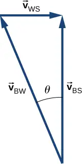
d. \(|{\mathbf{\vec{v}}}_{\text{BS}}|=7.4\:\text{km}\text{/}\text{h}\) \(t=6.5\:\min\)
e. \({\mathbf{\vec{v}}}_{\text{BS}}=8.54\:\text{km}\text{/}\text{h},\) but only the component of the velocity straight across the river is used to get the time
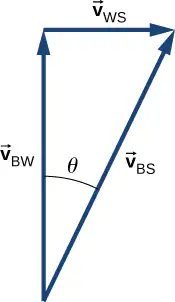
\(t=6.0\:\min\)
Downstream = 0.3 km
76. A small plane flies at 200 km/h in still air. If the wind blows directly out of the west at 50 km/h, (a) in what direction must the pilot head her plane to move directly north across land and (b) how long does it take her to reach a point 300 km directly north of her starting point?
77. A cyclist traveling southeast along a road at 15 km/h feels a wind blowing from the southwest at 25 km/h. To a stationary observer, what are the speed and direction of the wind?
Answer
\({\mathbf{\vec{v}}}_{AG}={\mathbf{\vec{v}}}_{AC}+{\mathbf{\vec{v}}}_{CG}\)
\(|{\mathbf{\vec{v}}}_{AC}|=25\:\text{km}\text{/}\text{h}\;|{\mathbf{\vec{v}}}_{CG}|=15\:\text{km}\text{/}\text{h}\;|{\mathbf{\vec{v}}}_{AG}|=29.15\:\text{km}\text{/}\text{h}\) \({\mathbf{\vec{v}}}_{AG}={\mathbf{\vec{v}}}_{AC}+{\mathbf{\vec{v}}}_{CG}\)
The angle between \({\mathbf{\vec{v}}}_{AC}\) and \({\mathbf{\vec{v}}}_{AG}\) is \(31{}^{\circ},\) so the direction of the wind is \(14{}^{\circ}\) north of east.
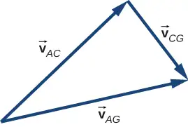
78. A river is moving east at 4.0 m/s. A boat starts from the dock heading \(30{}^{\circ}\) north of west at 7.0 m/s. If the river is 1800 m wide, (a) what is the velocity of the boat with respect to Earth and (b) how long does it take the boat to cross the river?
Additional Problems¶
79. A Formula One race car is traveling at 89.0 m/s along a straight track enters a turn on the race track with radius of curvature of 200.0 m. What centripetal acceleration must the car have to stay on the track?
Answer
\(a_{\text{C}}=39.6\:\text{m}\text{/}\text{s}^{2}\)
80. A particle travels in a circular orbit of radius 10 m. Its speed is changing at a rate of \(15.0\:\text{m}\text{/}\text{s}^{2}\) at an instant when its speed is 40.0 m/s. What is the magnitude of the acceleration of the particle?
81. The driver of a car moving at 90.0 km/h presses down on the brake as the car enters a circular curve of radius 150.0 m. If the speed of the car is decreasing at a rate of 9.0 km/h each second, what is the magnitude of the acceleration of the car at the instant its speed is 60.0 km/h?
Answer
\(90.0\:\text{km}\text{/}\text{h}=25.0\:\text{m}\text{/}\text{s,}\;9.0\:\text{km}\text{/}\text{h}=2.5\:\text{m}\text{/}\text{s},\) \(60.0\:\text{km}\text{/}\text{h}=16.7\:\text{m}\text{/}\text{s}\)
\(a_{\text{T}}=-2.5\:\text{m/s}^{2}{,}\:a_{\text{C}}=1.86\:\text{m}\text{/}\text{s}^{2},a=3.1\:\text{m}\text{/}\text{s}^{2}\)
82. A race car entering the curved part of the track at the Daytona 500 drops its speed from 85.0 m/s to 80.0 m/s in 2.0 s. If the radius of the curved part of the track is 316.0 m, calculate the total acceleration of the race car at the beginning and ending of reduction of speed.
83. An elephant is located on Earth’s surface at a latitude \(\lambda.\) Calculate the centripetal acceleration of the elephant resulting from the rotation of Earth around its polar axis. Express your answer in terms of \(\lambda,\) the radius \(R_{E}\) of Earth, and time T for one rotation of Earth. Compare your answer with g for \(\lambda=40{}^{\circ}.\)
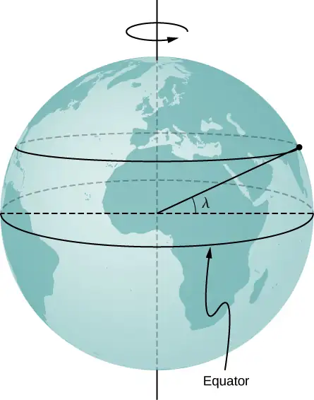
Answer
The radius of the circle of revolution at latitude \(\lambda\) is \(R_{E}\cos\:\lambda.\) The velocity of the body is \(\frac{2\pi r}{T}.\:a_{C}=\frac{4\pi^{2}R_{E}\cos\:\lambda}{T^{2}}\) for \(\lambda=40{}^{\circ},\:a_{\text{C}}=0.26\text{\%}\:g\)
84. A proton in a synchrotron is moving in a circle of radius 1 km and increasing its speed by \(v(t)=c_{1}+c_{2}t^{2},\:\text{where}\:c_{1}=2.0\:\times\:{10}^{5}\text{m}\text{/}\text{s,}\)
\(c_{2}={10}^{5}\text{m}\text{/}\text{s}^{3}.\) (a) What is the proton’s total acceleration at t = 5.0 s? (b) At what time does the expression for the velocity become unphysical?
85. A propeller blade at rest starts to rotate from t = 0 s to t = 5.0 s with a tangential acceleration of the tip of the blade at \(3.00\:\text{m}\text{/}\text{s}^{2}.\) The tip of the blade is 1.5 m from the axis of rotation. At t = 5.0 s, what is the total acceleration of the tip of the blade?
Answer
\(a_{\text{T}}=3.00\:\text{m}\text{/}\text{s}^{2}\)
\(v(5\:\text{s})=15.00\:\text{m}\text{/}\text{s}\;a_{\text{C}}=150.00\:\text{m}\text{/}\text{s}^{2}\;\theta=88.8{}^{\circ}\) with respect to the tangent to the circle of revolution directed inward. \(|\mathbf{\vec{a}}|=150.03\:\text{m}\text{/}\text{s}^{2}\)
86. A particle is executing circular motion with a constant angular frequency of \(\omega=4.00\:\text{rad}\text{/}\text{s}.\) If time t = 0 corresponds to the position of the particle being located at y = 0 m and x = 5 m, (a) what is the position of the particle at t = 10 s? (b) What is its velocity at this time? (c) What is its acceleration?
87. A particle’s centripetal acceleration is \(a_{\text{C}}=4.0\:\text{m}\text{/}\text{s}^{2}\) at t = 0 s where it is on the x-axis and moving counterclockwise in the xy plane. It is executing uniform circular motion about an axis at a distance of 5.0 m. What is its velocity at t = 10 s?
Answer
\(\mathbf{\vec{a}}(t)=-A\omega^{2}\:\cos\:\omega t\mathbf{\hat{i}}-A\omega^{2}\:\sin\:\omega t\mathbf{\hat{j}}\)
\(a_{C}=5.0\:\text{m}\omega^{2}\;\omega=0.89\:\text{rad}\text{/}\text{s}\)
\(\mathbf{\vec{v}}(t)=-2.24\:\text{m}\text{/}\text{s}\:\mathbf{\hat{i}}-3.87\:\text{m}\text{/}\text{s}\mathbf{\hat{j}}\)
88. A rod 3.0 m in length is rotating at 2.0 rev/s about an axis at one end. Compare the centripetal accelerations at radii of (a) 1.0 m, (b) 2.0 m, and (c) 3.0 m.
89. A particle located initially at \((1.5\mathbf{\hat{j}}+4.0\mathbf{\hat{k}})\text{m}\) undergoes a displacement of \((2.5\mathbf{\hat{i}}+3.2\mathbf{\hat{j}}-1.2\mathbf{\hat{k}})\:\text{m}.\) What is the final position of the particle?
Answer
\({\mathbf{\vec{r}}}_{1}=1.5\mathbf{\hat{j}}+4.0\mathbf{\hat{k}}\;{\mathbf{\vec{r}}}_{2}=\Delta\mathbf{\vec{r}}+{\mathbf{\vec{r}}}_{1}=2.5\mathbf{\hat{i}}+4.7\mathbf{\hat{j}}+2.8\mathbf{\hat{k}}\)
90. The position of a particle is given by \(\mathbf{\vec{r}}(t)=(50\:\text{m}\text{/}\text{s})t\mathbf{\hat{i}}-(4.9\:\text{m}\text{/}\text{s}^{2})t^{2}\mathbf{\hat{j}}.\) (a) What are the particle’s velocity and acceleration as functions of time? (b) What are the initial conditions to produce the motion?
91. A spaceship is traveling at a constant velocity of \(\mathbf{\vec{v}}(t)=250.0\mathbf{\hat{i}}\text{m}\text{/}\text{s}\) when its rockets fire, giving it an acceleration of \(\mathbf{\vec{a}}(t)=(3.0\mathbf{\hat{i}}+4.0\mathbf{\hat{k}})\text{m}\text{/}\text{s}^{2}.\) What is its velocity \(5\) s after the rockets fire?
Answer
\(v_{x}(t)=265.0\:\text{m}\text{/}\text{s}\)
\(v_{y}(t)=20.0\:\text{m}\text{/}\text{s}\)
\(\mathbf{\vec{v}}(5.0\:\text{s})=(265.0\mathbf{\hat{i}}+20.0\mathbf{\hat{j}})\text{m}\text{/}\text{s}\)
92. A crossbow is aimed horizontally at a target 40 m away. The arrow hits 30 cm below the spot at which it was aimed. What is the initial velocity of the arrow?
93. A long jumper can jump a distance of 8.0 m when he takes off at an angle of \(45{}^{\circ}\) with respect to the horizontal. Assuming he can jump with the same initial speed at all angles, how much distance does he lose by taking off at \(30{}^{\circ}?\)
Answer
\(R=1.07\:\text{m}\)
94. On planet Arcon, the maximum horizontal range of a projectile launched at 10 m/s is 20 m. What is the acceleration of gravity on this planet?
95. A mountain biker encounters a jump on a race course that sends him into the air at \(60{}^{\circ}\) to the horizontal. If he lands at a horizontal distance of 45.0 m and 20 m below his launch point, what is his initial speed?
Answer
\(v_{0}=20.1\:\text{m}\text{/}\text{s}\)
96. Which has the greater centripetal acceleration, a car with a speed of 15.0 m/s along a circular track of radius 100.0 m or a car with a speed of 12.0 m/s along a circular track of radius 75.0 m?
97. A geosynchronous satellite orbits Earth at a distance of 42,250.0 km and has a period of 1 day. What is the centripetal acceleration of the satellite?
Answer
\(v=3072.5\:\text{m}\text{/}\text{s}\)
\(a_{\text{C}}=0.223\:\text{m}\text{/}\text{s}^{2}\)
98. Two speedboats are traveling at the same speed relative to the water in opposite directions in a moving river. An observer on the riverbank sees the boats moving at 4.0 m/s and 5.0 m/s. (a) What is the speed of the boats relative to the river? (b) How fast is the river moving relative to the shore?
Challenge Problems¶
99. World’s Longest Par 3. The tee of the world’s longest par 3 sits atop South Africa’s Hanglip Mountain at 400.0 m above the green and can only be reached by helicopter. The horizontal distance to the green is 359.0 m. Neglect air resistance and answer the following questions. (a) If a golfer launches a shot that is \(40{}^{\circ}\) with respect to the horizontal, what initial velocity must she give the ball? (b) What is the time to reach the green?
Answer
a. \(-400.0\:\text{m}=v_{0y}t-4.9t^{2}\;359.0\:\text{m}=v_{0x}t\;t=\frac{359.0}{v_{0x}}\;-400.0=359.0\frac{v_{0y}}{v_{0x}}-4.9{(\frac{359.0}{v_{0x}})}^{2}\)
\(-400.0=359.0\:\tan\:40-\frac{631,516.9}{v_{0x}^{2}}\Rightarrow v_{0x}^{2}=900.6\;v_{0x}=30.0\:\text{m}\text{/}\text{s}\;v_{0y}=v_{0x}\:\tan\:40=25.2\:\text{m}\text{/}\text{s}\)
\(v=39.2\:\text{m}\text{/}\text{s}\), b. \(t=12.0\:\text{s}\)
100. When a field goal kicker kicks a football as hard as he can at \(45{}^{\circ}\) to the horizontal, the ball just clears the 3-m-high crossbar of the goalposts 45.7 m away. (a) What is the maximum speed the kicker can impart to the football? (b) In addition to clearing the crossbar, the football must be high enough in the air early during its flight to clear the reach of the onrushing defensive lineman. If the lineman is 4.6 m away and has a vertical reach of 2.5 m, can he block the 45.7-m field goal attempt? (c) What if the lineman is 1.0 m away?
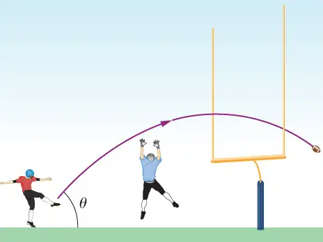
101. A truck is traveling east at 80 km/h. At an intersection 32 km ahead, a car is traveling north at 50 km/h. (a) How long after this moment will the vehicles be closest to each other? (b) How far apart will they be at that point?
Answer
a. \({\mathbf{\vec{r}}}_{TC}=(-32+80t)\mathbf{\hat{i}}+50t\mathbf{\hat{j}},\;{|{\mathbf{\vec{r}}}_{TC}|}^{2}={(-32+80t)}^{2}+{(50t)}^{2}\)
\(2r\frac{dr}{dt}=2(-32+80t)(80)+5000t\;\frac{dr}{dt}=\frac{160(-32+80t)+5000t}{2r}=0\)
\(17800t=5184\Rightarrow t=\text{0.29 hr}\),
b. \(|{\mathbf{\vec{r}}}_{TC}|=17\:\text{km}\)
Adapted from University Physics Volume 1 by OpenStax, licensed under CC BY 4.0. Access the original for free at openstax.org. Changes: converted to the web reading format of The Open Book Project.